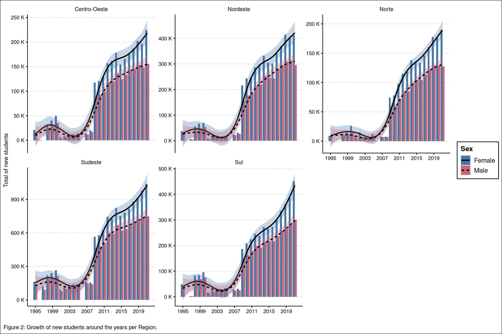
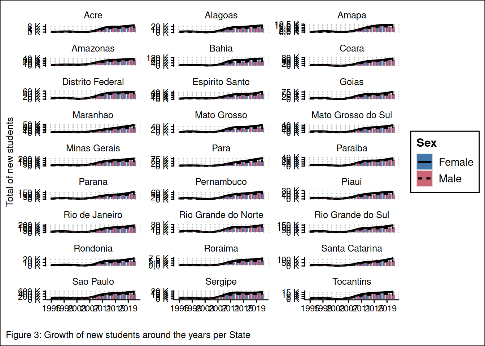

1. Introduction
O Governo brasileiro vem coletando informações sobre as Instituições de Ensino Superior (IES) de 1995 à 2021 (Fonte). Há informações acerca do perfil das IES e dos alunos ao longo do país. Contudo, é importante destacar que há diferenças significativas entre as bases de dados 1995 ~ 2008; estando padronizadas apenas às de 2009 ~ 2021 (see ETL section).
2. Objective
Nosso objetivo foi entender a evolução das instituições de ensino superior (IES) em termos de número e o perfil docente e discente ao longo dos anos amostrados e identificar variáveis que expliquem os padrões encontrados.
3. Data Analysis
3.1 Time Series - New students
As análise de séries temporais apenas a nível de sexo, uma vez que as bases de dados não dispoẽm das mesmas informações.
De acordo com nossas estimativas, em média 971.7 mil mulheres (sd = 785) e 758.7 mil homens (sd = 598) ingressaram anualmente nas IES do país entre 1995 e 2021 Pôde-se observar uma tendência de crescimento do número de alunos ao longo dos anos, tanto os do sexo masculino, quanto do feminino (Figure 1; Table 1).
Code
ts_hm %>%
gather('var', 'value', 3:10) %>%
separate(var, c('var1', 'var2'), sep = 'qt_ing_') %>%
separate(var2, c('sex', 'func'), sep = '_') %>%
select(-var1) %>%
mutate(sex = ifelse(sex == 'fem', 'Female', 'Male')) %>%
spread(func, value) %>%
ggplot(aes(y = sum, x = nu_ano_censo)) +
geom_bar(aes(fill = sex),
position = 'dodge', stat = 'identity') +
geom_smooth(aes(linetype = sex, fill = sex),
col = 'black',
alpha = 0.3,
method = 'gam') +
theme_clean() +
scale_fill_ptol() +
scale_y_continuous(labels = scales::number_format(suffix = ' K', big.mark = '.', decimal.mark = ',', scale = 1e-3),
breaks = seq(0, 3*1e6, by = 500000)) +
scale_x_continuous(breaks = seq(1995, 2021, by = 4))+
labs(fill = 'Sex',
linetype = 'Sex',
caption = 'Figure 1: Growth of new students around the years.') +
theme(plot.caption.position = "plot",
plot.caption = element_text(hjust = 0)) +
ylab('Total of new students') +
xlab('')Code
students_2008 %>%
full_join(students_2021) %>%
select(nu_ano_censo, no_regiao, qt_ing_fem, qt_ing_masc) %>%
mutate(tot_ing = qt_ing_fem + qt_ing_masc) %>%
group_by(nu_ano_censo) %>%
summarise_if(is.numeric, sum) %>%
ungroup() %>%
select(2:3) %>%
get_summary_stats() %>%
mutate(variable = ifelse(variable == 'qt_ing_fem', 'Female', 'Male')) %>%
mutate_if(is.numeric, scales::number_format(big.mark = ',')) %>%
rename(Sex = 'variable') %>%
kbl(caption = 'Table 1: Descriptive statistics for new students by sex.', align = 'c', digits = 2) %>%
kable_paper('basic', position = 'left', full_width = F) %>%
column_spec(1:13, background = 'white', color = 'black') %>%
row_spec(0, background = 'white', color = 'black')| Sex | n | min | max | median | q1 | q3 | iqr | mad | mean | sd | se | ci |
|---|---|---|---|---|---|---|---|---|---|---|---|---|
| Female | 26 | 1,047 | 2,317,274 | 833,211 | 225,180 | 1,644,102 | 1,418,923 | 997,929 | 971,696 | 785,067 | 153,964 | 317,095 |
| Male | 26 | 892 | 1,627,817 | 656,258 | 192,105 | 1,326,475 | 1,134,370 | 787,776 | 758,676 | 597,780 | 117,234 | 241,449 |
3.2 Time Series - New students per Region
A região com maior crescimento de alunos ao longo dos anos foi o Sudeste (mean = 877,61 K; sd = 595,20 K), seguido por Nordeste (\(321.32 \ \pm \ 274.42\)), Sul (\(301.41 \ \pm \ 239.46\)), Norte (\(135.33 \ \pm \ 117.40\)) e Centro-Oeste (\(169.04 \ \pm \ 139.36\)). Acreditamos que este padrão está associado ao tamanho populacional de cada região, posteriormente testaremos esta hipótese.
Code
students_2008 %>%
full_join(students_2021) %>%
group_by(nu_ano_censo, no_regiao) %>%
summarise_at(c('qt_ing_fem', 'qt_ing_masc'), sum) %>%
gather('Sex', 'value', 3:4) %>%
na.omit() %>%
mutate(Sex = ifelse(Sex == 'qt_ing_fem', 'Female', 'Male')) %>%
ggplot(aes(x = nu_ano_censo,
y = value,
linetype = Sex,
fill = Sex)) +
geom_bar(stat = 'identity', position = 'dodge') +
geom_smooth(aes(linetype = Sex, fill = Sex),
col = 'black',
alpha = 0.3,
method = 'gam') +
theme_clean() +
scale_fill_ptol() +
scale_y_continuous(labels = scales::number_format(suffix = ' K', big.mark = '.', decimal.mark = ',', scale = 1e-3)) +
scale_x_continuous(breaks = seq(1995, 2021, by = 4)) +
facet_wrap(~ no_regiao, scales = 'free_y') +
labs(fill = 'Sex',
linetype = 'Sex',
caption = 'Figure 2: Growth of new students around the years per Region.') +
theme(plot.caption.position = "plot",
plot.caption = element_text(hjust = 0)) +
ylab('Total of new students') +
xlab('')
Code
students_2008 %>%
full_join(students_2021) %>%
select(nu_ano_censo, no_regiao, qt_ing_fem, qt_ing_masc) %>%
mutate(tot_ing = qt_ing_fem + qt_ing_masc) %>%
group_by(nu_ano_censo, no_regiao) %>%
summarise_if(is.numeric, sum) %>%
ungroup() %>%
select(2:5) %>%
group_by(no_regiao) %>%
get_summary_stats() %>%
na.omit() %>%
mutate(variable = case_when(variable == 'qt_ing_fem' ~ 'Female',
variable == 'qt_ing_masc' ~ 'Male',
variable == 'tot_ing' ~ 'Total',
)) %>%
rename(Region = 'no_regiao') %>%
mutate_if(is.numeric, scales::number_format(big.mark = ',')) %>%
kbl(caption = 'Table 2: Descriptive statistics for new students by Region.', align = 'c', digits = 2) %>%
kable_paper('basic', position = 'left', full_width = F) %>%
column_spec(1:14, background = 'white', color = 'black') %>%
row_spec(0, background = 'white', color = 'black')| Region | variable | n | min | max | median | q1 | q3 | iqr | mad | mean | sd | se | ci |
|---|---|---|---|---|---|---|---|---|---|---|---|---|---|
| Centro-Oeste | Female | 25 | 1,047 | 224,415 | 117,277 | 14,309 | 165,545 | 151,236 | 117,925 | 96,058 | 79,256 | 15,851 | 32,715 |
| Centro-Oeste | Male | 25 | 892 | 155,237 | 88,221 | 11,926 | 133,291 | 121,365 | 88,962 | 72,979 | 60,195 | 12,039 | 24,847 |
| Centro-Oeste | Total | 25 | 1,939 | 379,652 | 205,498 | 25,871 | 298,836 | 272,965 | 206,886 | 169,037 | 139,361 | 27,872 | 57,525 |
| Nordeste | Female | 25 | 5,887 | 415,022 | 216,067 | 24,421 | 305,287 | 280,866 | 236,426 | 181,912 | 155,593 | 31,119 | 64,226 |
| Nordeste | Male | 25 | 4,058 | 314,451 | 157,379 | 21,931 | 246,074 | 224,143 | 186,435 | 139,411 | 118,992 | 23,798 | 49,117 |
| Nordeste | Total | 25 | 9,945 | 724,953 | 373,446 | 46,352 | 551,361 | 505,009 | 431,715 | 321,323 | 274,420 | 54,884 | 113,275 |
| Norte | Female | 24 | 6,920 | 189,706 | 76,180 | 11,580 | 136,602 | 125,022 | 94,499 | 77,938 | 67,741 | 13,828 | 28,605 |
| Norte | Male | 24 | 4,366 | 129,293 | 59,405 | 7,684 | 104,231 | 96,547 | 76,230 | 57,394 | 49,744 | 10,154 | 21,005 |
| Norte | Total | 24 | 11,286 | 317,509 | 135,585 | 19,629 | 238,349 | 218,720 | 168,795 | 135,332 | 117,401 | 23,964 | 49,574 |
| Sudeste | Female | 25 | 97,555 | 1,038,153 | 565,675 | 156,449 | 780,513 | 624,064 | 513,023 | 487,211 | 336,075 | 67,215 | 138,725 |
| Sudeste | Male | 25 | 79,520 | 747,367 | 465,380 | 133,971 | 633,992 | 500,021 | 400,886 | 390,396 | 259,528 | 51,906 | 107,128 |
| Sudeste | Total | 25 | 177,075 | 1,785,520 | 1,031,055 | 295,412 | 1,414,505 | 1,119,093 | 885,091 | 877,606 | 595,196 | 119,039 | 245,685 |
| Sul | Female | 25 | 2,296 | 451,511 | 186,791 | 31,348 | 272,260 | 240,912 | 203,858 | 170,385 | 138,027 | 27,605 | 56,975 |
| Sul | Male | 25 | 2,349 | 301,103 | 150,375 | 25,208 | 216,090 | 190,882 | 158,109 | 131,029 | 101,728 | 20,346 | 41,991 |
| Sul | Total | 25 | 4,645 | 752,614 | 337,166 | 56,556 | 486,584 | 430,028 | 368,677 | 301,414 | 239,456 | 47,891 | 98,843 |
3.3 Time Series - New students per State
Os três estados com maior ingresso de alunos ao longo dos anos foi o São Paulo (\(553.17 \ \pm \ 329.23 K\)), seguido por Minas Gerais (\(167.92 \ \pm \ 128.15 K\)), Rio de Janeiro (\(153.61 \ \pm \ 115.95 K\)), Curitiba (\(114,94 \ \pm \ 92,11 K\)) e Rio Grande do Sul (\(110,01 \ \pm \ 84,13 K\)) (Figure 3; Table 3). Neste caso, o tamanho populacional aparentemente teve menos peso, uma vez que o o quarto estado mais populoso do Brasil (Bahia) ocupa a sexta colocação em número de alunos, indicando que há outras variáveis que precisam ser consideradas nas análises.
Code
students_2008 %>%
full_join(students_2021) %>%
group_by(nu_ano_censo, no_uf) %>%
summarise_at(c('qt_ing_fem', 'qt_ing_masc'), sum) %>%
gather('Sex', 'value', 3:4) %>%
na.omit() %>%
mutate(Sex = ifelse(Sex == 'qt_ing_fem', 'Female', 'Male')) %>%
ggplot(aes(x = nu_ano_censo,
y = value,
linetype = Sex,
fill = Sex)) +
geom_bar(stat = 'identity', position = 'dodge') +
geom_smooth(aes(linetype = Sex, fill = Sex),
col = 'black',
alpha = 0.3,
method = 'gam') +
theme_clean() +
scale_fill_ptol() +
scale_y_continuous(labels = scales::number_format(suffix = ' K', big.mark = '.', decimal.mark = ',', scale = 1e-3)) +
scale_x_continuous(breaks = seq(1995, 2021, by = 4)) +
facet_wrap(~ no_uf, scales = 'free_y', ncol = 3) +
labs(fill = 'Sex',
linetype = 'Sex',
caption = 'Figure 3: Growth of new students around the years per State') +
theme(plot.caption.position = "plot",
plot.caption = element_text(hjust = 0)) +
ylab('Total of new students') +
xlab('')Code
students_2008 %>%
full_join(students_2021) %>%
select(nu_ano_censo, no_uf, qt_ing_fem, qt_ing_masc) %>%
mutate(tot_ing = qt_ing_fem + qt_ing_masc) %>%
group_by(nu_ano_censo, no_uf) %>%
summarise_if(is.numeric, sum) %>%
ungroup() %>%
select(2:5) %>%
group_by(no_uf) %>%
get_summary_stats() %>%
na.omit() %>%
mutate(variable = case_when(variable == 'qt_ing_fem' ~ 'Female',
variable == 'qt_ing_masc' ~ 'Male',
variable == 'tot_ing' ~ 'Total',
)) %>%
rename(State = 'no_uf') %>%
mutate_if(is.numeric, scales::number_format(big.mark = ',')) %>%
kbl(caption = 'Table 3: Descriptive statistics for new students by State.', align = 'l', digits = 2) %>%
kable_paper('basic', position = 'left', full_width = F) %>%
column_spec(1:14, background = 'white', color = 'black') %>%
row_spec(0, background = 'white', color = 'black')| State | variable | n | min | max | median | q1 | q3 | iqr | mad | mean | sd | se | ci |
|---|---|---|---|---|---|---|---|---|---|---|---|---|---|
| Acre | Female | 24 | 47 | 9,569 | 4,037 | 328.5 | 7,546 | 7,217.0 | 5,567 | 4,126 | 3,749.0 | 765.26 | 1,583.06 |
| Acre | Male | 24 | 16 | 7,191 | 2,898 | 291.5 | 5,781 | 5,489.8 | 4,202 | 3,051 | 2,836.8 | 579.05 | 1,197.86 |
| Acre | Total | 24 | 88 | 16,475 | 6,936 | 620.0 | 13,303 | 12,683.2 | 9,531 | 7,177 | 6,575.8 | 1,342.27 | 2,776.70 |
| Alagoas | Female | 24 | 256 | 23,345 | 15,494 | 1,981.8 | 17,932 | 15,950.8 | 11,399 | 11,220 | 8,893.0 | 1,815.28 | 3,755.20 |
| Alagoas | Male | 24 | 285 | 17,381 | 10,834 | 1,517.0 | 14,768 | 13,251.2 | 9,277 | 8,490 | 6,702.3 | 1,368.10 | 2,830.12 |
| Alagoas | Total | 24 | 541 | 40,213 | 26,327 | 3,396.8 | 32,706 | 29,309.5 | 20,506 | 19,709 | 15,571.8 | 3,178.58 | 6,575.39 |
| Amapa | Female | 24 | 84 | 11,467 | 3,836 | 362.5 | 10,040 | 9,678.0 | 5,277 | 4,979 | 4,557.4 | 930.27 | 1,924.41 |
| Amapa | Male | 24 | 49 | 9,204 | 2,918 | 226.2 | 7,463 | 7,237.0 | 4,157 | 3,760 | 3,669.8 | 749.09 | 1,549.60 |
| Amapa | Total | 24 | 133 | 20,671 | 6,754 | 511.8 | 17,648 | 17,136.2 | 9,380 | 8,739 | 8,206.9 | 1,675.22 | 3,465.46 |
| Amazonas | Female | 24 | 1,515 | 38,822 | 24,098 | 2,542.0 | 31,829 | 29,287.2 | 21,123 | 18,907 | 14,649.9 | 2,990.40 | 6,186.10 |
| Amazonas | Male | 24 | 1,024 | 31,041 | 20,560 | 2,511.8 | 26,560 | 24,048.5 | 15,288 | 15,362 | 12,118.6 | 2,473.70 | 5,117.25 |
| Amazonas | Total | 24 | 2,539 | 68,910 | 44,658 | 5,053.8 | 58,744 | 53,690.0 | 35,683 | 34,270 | 26,741.2 | 5,458.53 | 11,291.84 |
| Bahia | Female | 25 | 1,090 | 111,208 | 61,800 | 6,720.0 | 84,830 | 78,110.0 | 66,950 | 49,137 | 42,319.0 | 8,463.81 | 17,468.44 |
| Bahia | Male | 25 | 926 | 72,820 | 38,227 | 5,313.0 | 57,628 | 52,315.0 | 44,359 | 32,846 | 27,936.8 | 5,587.35 | 11,531.73 |
| Bahia | Total | 25 | 2,016 | 184,028 | 100,027 | 12,066.0 | 141,058 | 128,992.0 | 110,455 | 81,983 | 70,201.2 | 14,040.25 | 28,977.65 |
| Ceara | Female | 24 | 2 | 71,383 | 27,112 | 455.5 | 49,862 | 49,406.8 | 37,089 | 28,021 | 26,212.3 | 5,350.57 | 11,068.49 |
| Ceara | Male | 24 | 3 | 58,209 | 22,172 | 471.2 | 43,875 | 43,403.8 | 32,224 | 23,258 | 21,682.6 | 4,425.94 | 9,155.76 |
| Ceara | Total | 24 | 5 | 129,592 | 49,284 | 926.8 | 94,166 | 93,238.8 | 69,358 | 51,279 | 47,864.6 | 9,770.32 | 20,211.46 |
| Distrito Federal | Female | 24 | 3,568 | 54,787 | 35,024 | 5,577.8 | 48,324 | 42,746.5 | 27,880 | 28,157 | 21,105.6 | 4,308.17 | 8,912.13 |
| Distrito Federal | Male | 24 | 1,836 | 45,783 | 29,218 | 5,134.8 | 41,576 | 36,441.2 | 23,303 | 23,628 | 17,701.1 | 3,613.22 | 7,474.52 |
| Distrito Federal | Total | 24 | 6,003 | 100,570 | 64,452 | 10,708.0 | 90,982 | 80,273.8 | 50,648 | 51,785 | 38,785.3 | 7,917.01 | 16,377.59 |
| Espirito Santo | Female | 24 | 3,173 | 45,122 | 22,606 | 6,363.8 | 30,321 | 23,957.0 | 20,961 | 19,428 | 13,506.9 | 2,757.07 | 5,703.44 |
| Espirito Santo | Male | 24 | 2,739 | 31,849 | 16,006 | 5,392.2 | 23,824 | 18,431.2 | 15,005 | 14,857 | 10,023.3 | 2,046.00 | 4,232.48 |
| Espirito Santo | Total | 24 | 5,912 | 76,971 | 38,612 | 11,899.2 | 54,144 | 42,245.0 | 36,152 | 34,285 | 23,510.3 | 4,799.02 | 9,927.54 |
| Goias | Female | 24 | 891 | 79,852 | 40,558 | 6,407.2 | 53,622 | 47,214.8 | 39,187 | 32,952 | 26,463.5 | 5,401.83 | 11,174.54 |
| Goias | Male | 24 | 673 | 52,922 | 29,742 | 4,145.2 | 40,289 | 36,144.0 | 29,474 | 24,035 | 19,320.1 | 3,943.69 | 8,158.15 |
| Goias | Total | 24 | 1,564 | 132,774 | 70,300 | 10,552.5 | 92,886 | 82,333.5 | 69,037 | 56,987 | 45,746.9 | 9,338.04 | 19,317.22 |
| Maranhao | Female | 24 | 294 | 46,856 | 17,453 | 2,752.0 | 27,868 | 25,116.2 | 21,000 | 17,174 | 15,490.8 | 3,162.04 | 6,541.19 |
| Maranhao | Male | 24 | 324 | 30,732 | 12,490 | 1,818.5 | 21,302 | 19,483.8 | 15,107 | 12,607 | 11,139.1 | 2,273.76 | 4,703.62 |
| Maranhao | Total | 24 | 618 | 76,895 | 30,352 | 5,090.2 | 48,690 | 43,600.2 | 36,713 | 29,781 | 26,583.1 | 5,426.26 | 11,225.07 |
| Mato Grosso | Female | 25 | 1,047 | 49,045 | 23,481 | 3,880.0 | 36,564 | 32,684.0 | 28,330 | 20,990 | 17,624.0 | 3,524.79 | 7,274.81 |
| Mato Grosso | Male | 25 | 514 | 31,639 | 16,998 | 2,801.0 | 27,410 | 24,609.0 | 19,191 | 14,720 | 12,419.2 | 2,483.84 | 5,126.39 |
| Mato Grosso | Total | 25 | 1,671 | 80,284 | 40,479 | 7,104.0 | 63,998 | 56,894.0 | 48,812 | 35,710 | 30,011.4 | 6,002.27 | 12,388.08 |
| Mato Grosso do Sul | Female | 24 | 669 | 42,822 | 18,474 | 2,748.8 | 29,638 | 26,889.2 | 21,082 | 17,087 | 13,704.0 | 2,797.31 | 5,786.68 |
| Mato Grosso do Sul | Male | 24 | 558 | 30,146 | 13,358 | 2,093.0 | 23,004 | 20,911.2 | 15,775 | 13,023 | 10,424.4 | 2,127.87 | 4,401.83 |
| Mato Grosso do Sul | Total | 24 | 1,227 | 72,968 | 31,832 | 4,841.8 | 52,925 | 48,083.0 | 37,104 | 30,110 | 24,114.2 | 4,922.30 | 10,182.54 |
| Minas Gerais | Female | 25 | 3,623 | 212,675 | 112,510 | 24,204.0 | 153,682 | 129,478.0 | 112,230 | 94,804 | 73,004.6 | 14,600.92 | 30,134.81 |
| Minas Gerais | Male | 25 | 1,802 | 144,214 | 89,507 | 19,800.0 | 124,840 | 105,040.0 | 81,109 | 73,113 | 55,307.8 | 11,061.55 | 22,829.92 |
| Minas Gerais | Total | 25 | 5,425 | 356,283 | 203,792 | 45,648.0 | 277,842 | 232,194.0 | 201,085 | 167,917 | 128,150.0 | 25,630.00 | 52,897.72 |
| Para | Female | 24 | 2,501 | 82,595 | 22,036 | 4,461.2 | 50,214 | 45,753.0 | 27,287 | 29,856 | 28,017.6 | 5,719.07 | 11,830.79 |
| Para | Male | 24 | 1,656 | 54,468 | 16,986 | 3,759.5 | 37,103 | 33,343.8 | 20,951 | 21,097 | 19,202.7 | 3,919.74 | 8,108.60 |
| Para | Total | 24 | 4,157 | 137,063 | 39,022 | 8,493.0 | 87,157 | 78,664.0 | 48,005 | 50,952 | 47,196.9 | 9,634.03 | 19,929.50 |
| Paraiba | Female | 24 | 2,594 | 36,518 | 17,104 | 4,706.8 | 25,968 | 21,261.8 | 17,704 | 16,129 | 12,231.0 | 2,496.65 | 5,164.72 |
| Paraiba | Male | 24 | 2,378 | 29,266 | 14,220 | 4,185.0 | 23,517 | 19,331.8 | 14,615 | 14,000 | 10,426.2 | 2,128.24 | 4,402.60 |
| Paraiba | Total | 24 | 4,972 | 64,829 | 31,325 | 8,891.8 | 49,638 | 40,746.5 | 32,545 | 30,129 | 22,629.5 | 4,619.22 | 9,555.59 |
| Parana | Female | 25 | 132 | 180,325 | 74,580 | 13,452.0 | 101,811 | 88,359.0 | 78,086 | 64,329 | 52,881.3 | 10,576.26 | 21,828.33 |
| Parana | Male | 25 | 896 | 122,249 | 60,350 | 11,197.0 | 82,449 | 71,252.0 | 58,102 | 50,605 | 39,345.7 | 7,869.14 | 16,241.12 |
| Parana | Total | 25 | 1,028 | 302,574 | 135,701 | 24,649.0 | 185,200 | 160,551.0 | 135,044 | 114,935 | 92,109.1 | 18,421.83 | 38,020.78 |
| Pernambuco | Female | 25 | 408 | 66,168 | 35,086 | 5,837.0 | 49,176 | 43,339.0 | 34,241 | 29,720 | 23,910.9 | 4,782.17 | 9,869.92 |
| Pernambuco | Male | 25 | 332 | 55,603 | 26,890 | 5,359.0 | 40,736 | 35,377.0 | 28,743 | 23,998 | 19,616.9 | 3,923.38 | 8,097.46 |
| Pernambuco | Total | 25 | 740 | 121,771 | 61,976 | 11,196.0 | 89,435 | 78,239.0 | 65,438 | 53,719 | 43,510.8 | 8,702.16 | 17,960.38 |
| Piaui | Female | 24 | 35 | 29,143 | 13,620 | 2,332.8 | 19,962 | 17,629.8 | 14,791 | 12,230 | 9,831.9 | 2,006.93 | 4,151.65 |
| Piaui | Male | 24 | 12 | 20,268 | 9,844 | 2,153.2 | 15,148 | 12,995.2 | 10,503 | 8,934 | 7,183.5 | 1,466.33 | 3,033.34 |
| Piaui | Total | 24 | 47 | 48,802 | 23,464 | 4,486.0 | 35,114 | 30,627.5 | 25,135 | 21,163 | 16,979.9 | 3,466.00 | 7,169.96 |
| Rio Grande do Norte | Female | 24 | 731 | 28,032 | 16,944 | 1,755.2 | 21,723 | 19,967.5 | 13,762 | 13,108 | 10,086.8 | 2,058.96 | 4,259.27 |
| Rio Grande do Norte | Male | 24 | 167 | 22,829 | 14,316 | 1,598.0 | 18,728 | 17,129.5 | 12,291 | 11,313 | 8,922.0 | 1,821.20 | 3,767.45 |
| Rio Grande do Norte | Total | 24 | 898 | 49,887 | 31,404 | 3,320.2 | 40,341 | 37,021.0 | 26,636 | 24,421 | 18,970.9 | 3,872.42 | 8,010.71 |
| Rio Grande do Sul | Female | 25 | 2,164 | 150,670 | 66,712 | 11,023.0 | 100,006 | 88,983.0 | 62,840 | 62,784 | 48,647.6 | 9,729.52 | 20,080.74 |
| Rio Grande do Sul | Male | 25 | 1,453 | 98,791 | 53,826 | 8,714.0 | 78,265 | 69,551.0 | 53,560 | 47,230 | 35,622.1 | 7,124.43 | 14,704.10 |
| Rio Grande do Sul | Total | 25 | 3,617 | 249,461 | 120,538 | 19,655.0 | 178,414 | 158,759.0 | 116,400 | 110,014 | 84,134.2 | 16,826.84 | 34,728.88 |
| Rio de Janeiro | Female | 25 | 246 | 203,578 | 98,076 | 18,942.0 | 142,974 | 124,032.0 | 81,608 | 84,861 | 64,659.5 | 12,931.90 | 26,690.12 |
| Rio de Janeiro | Male | 25 | 168 | 148,494 | 81,106 | 15,008.0 | 121,297 | 106,289.0 | 66,097 | 68,747 | 51,374.4 | 10,274.88 | 21,206.32 |
| Rio de Janeiro | Total | 25 | 414 | 352,072 | 179,182 | 33,950.0 | 264,542 | 230,592.0 | 147,706 | 153,608 | 115,948.6 | 23,189.72 | 47,861.24 |
| Rondonia | Female | 24 | 278 | 23,195 | 9,814 | 1,298.5 | 15,785 | 14,486.2 | 11,844 | 9,392 | 7,942.2 | 1,621.19 | 3,353.69 |
| Rondonia | Male | 24 | 252 | 14,758 | 6,504 | 902.0 | 11,226 | 10,324.2 | 8,222 | 6,424 | 5,576.0 | 1,138.19 | 2,354.54 |
| Rondonia | Total | 24 | 530 | 37,953 | 16,317 | 2,245.8 | 27,138 | 24,892.8 | 19,653 | 15,817 | 13,499.3 | 2,755.53 | 5,700.24 |
| Roraima | Female | 24 | 0 | 7,822 | 3,039 | 223.8 | 6,021 | 5,797.0 | 4,309 | 3,173 | 3,007.2 | 613.84 | 1,269.82 |
| Roraima | Male | 24 | 0 | 5,642 | 2,371 | 269.0 | 4,652 | 4,383.5 | 3,285 | 2,373 | 2,194.0 | 447.85 | 926.44 |
| Roraima | Total | 24 | 0 | 13,047 | 5,410 | 492.8 | 10,712 | 10,219.0 | 7,592 | 5,546 | 5,193.4 | 1,060.10 | 2,192.97 |
| Santa Catarina | Female | 24 | 4,492 | 120,516 | 42,303 | 9,704.5 | 70,434 | 60,729.0 | 47,282 | 45,075 | 36,826.2 | 7,517.12 | 15,550.34 |
| Santa Catarina | Male | 24 | 2,869 | 80,063 | 35,014 | 7,642.2 | 55,887 | 48,244.5 | 39,455 | 34,576 | 26,759.1 | 5,462.17 | 11,299.36 |
| Santa Catarina | Total | 24 | 7,361 | 200,579 | 77,316 | 17,119.8 | 126,320 | 109,200.5 | 87,062 | 79,651 | 63,486.8 | 12,959.20 | 26,808.14 |
| Sao Paulo | Female | 25 | 63,443 | 576,778 | 331,309 | 115,879.0 | 457,223 | 341,344.0 | 293,759 | 288,895 | 185,852.5 | 37,170.50 | 76,716.13 |
| Sao Paulo | Male | 25 | 52,804 | 428,723 | 279,068 | 89,030.0 | 367,524 | 278,494.0 | 221,879 | 234,273 | 143,598.2 | 28,719.63 | 59,274.41 |
| Sao Paulo | Total | 25 | 116,247 | 1,000,194 | 610,377 | 205,388.0 | 824,747 | 619,359.0 | 511,863 | 523,168 | 329,234.1 | 65,846.82 | 135,901.15 |
| Sergipe | Female | 24 | 0 | 17,735 | 14,710 | 2,068.2 | 15,964 | 13,895.2 | 4,131 | 9,467 | 7,289.5 | 1,487.95 | 3,078.07 |
| Sergipe | Male | 24 | 0 | 13,960 | 11,209 | 1,475.8 | 12,492 | 11,016.0 | 3,589 | 7,406 | 5,589.2 | 1,140.89 | 2,360.12 |
| Sergipe | Total | 24 | 0 | 31,217 | 26,353 | 4,006.8 | 28,508 | 24,501.8 | 7,076 | 16,874 | 12,863.8 | 2,625.81 | 5,431.91 |
| Tocantins | Female | 24 | 0 | 17,144 | 9,320 | 158.2 | 14,387 | 14,228.5 | 10,751 | 7,504 | 6,820.2 | 1,392.16 | 2,879.91 |
| Tocantins | Male | 24 | 0 | 11,544 | 7,168 | 144.0 | 9,951 | 9,807.0 | 6,357 | 5,326 | 4,812.8 | 982.41 | 2,032.27 |
| Tocantins | Total | 24 | 0 | 27,744 | 16,489 | 302.2 | 24,740 | 24,437.8 | 15,979 | 12,830 | 11,603.4 | 2,368.53 | 4,899.67 |
3.4 Time Series - Age of new students
Com relação a idade dos ingressantes, os cinco grupos com mais novos alunos foram àqueles entre: 18~24 anos, com uma média anual de 1.20 M (sd = 505.50 K), seguido por 25~29 (\(402.40 \ \pm \ 161.02 \ K\)), 30~34 (\(265.79 \ \pm \ 140.69\)), 35~39 (\(178.01 \ \pm \ 115.71\)) e 40~49 (\(165.14 \ \pm \ 118.22\)). Este padrão aparenta estar associado á pirâmide etária nacional.

Code
students_2008 %>%
select(nu_ano_censo,
qt_ing_0_17 = qt_ing_0_18,
qt_ing_18_24 = qt_ing_19_24,
qt_ing_25_29,
qt_ing_30_34,
qt_ing_35_39,
qt_ing_40_44, qt_ing_45_49,
qt_ing_55_59, qt_ing_50_54,
qt_ing_60_64, qt_ing_65_mais) %>%
mutate(qt_ing_40_49 = qt_ing_40_44 + qt_ing_45_49,
qt_ing_50_59 = qt_ing_55_59 + qt_ing_50_54,
qt_ing_60_mais = qt_ing_60_64 + qt_ing_65_mais) %>%
select(nu_ano_censo, qt_ing_0_17, qt_ing_18_24, qt_ing_25_29, qt_ing_30_34,
qt_ing_35_39, qt_ing_40_49, qt_ing_50_59, qt_ing_60_mais) %>%
filter(nu_ano_censo > 1999) %>%
full_join(students_2021) %>%
select(nu_ano_censo, qt_ing_0_17, qt_ing_18_24, qt_ing_25_29, qt_ing_30_34,
qt_ing_35_39, qt_ing_40_49, qt_ing_50_59, qt_ing_60_mais) %>%
group_by(nu_ano_censo) %>%
summarise_if(is.numeric, sum, na.rm = T) %>%
gather('var', 'value', 2:9) %>%
mutate(var = case_when(var == 'qt_ing_0_17' ~ '<18',
var == 'qt_ing_18_24' ~ '18~24',
var == 'qt_ing_25_29' ~ '25~29',
var == 'qt_ing_30_34' ~ '30~34',
var == 'qt_ing_35_39' ~ '35~39',
var == 'qt_ing_40_49' ~ '40~49',
var == 'qt_ing_50_59' ~ '50~59',
var == 'qt_ing_60_mais' ~ '>60'),
var = fct_relevel(as.factor(var), '<18', '18~24', '25~29',
'30~34', '35~39', '40~49',
'50~59', '>60'),
var = fct_relevel(as.factor(var), '<18', '18~24', '25~29',
'30~34', '35~39', '40~49',
'50~59', '>60')) %>%
ggplot(aes(x = nu_ano_censo,
y = value,
linetype = var,
fill = var)) +
geom_bar(stat = 'identity', position = 'dodge') +
geom_smooth(method = 'loess', col = 'black') +
geom_vline(xintercept = 2008, linetype = 2, col = 'red', linewidth = 0.8) +
geom_vline(xintercept = 2009, linetype = 2, col = 'red', linewidth = 0.8) +
geom_vline(xintercept = 2014, linetype = 4, col = 'black', linewidth = 0.8) +
geom_vline(xintercept = 2016, linetype = 4, col = 'black', linewidth = 0.8) +
ggthemes::scale_fill_ptol() +
ggthemes::theme_clean() +
facet_wrap( ~ var, scales = 'free_y') +
labs(fill = 'Sex',
linetype = 'Sex',
caption = 'Figure 4: Growth of new students by age. The red vertical lines representes the economical and the black the political crises of 2008-09 and 2014-16, respectively.') +
theme(plot.caption.position = "plot",
plot.caption = element_text(hjust = 0)) +
ylab('Total of new students') +
xlab('') +
scale_y_continuous(labels = scales::label_number(suffix = "K", scale = 1e-3, big.mark = ','))Code
students_2008 %>%
full_join(students_2021) %>%
group_by(nu_ano_censo, no_uf) %>%
summarise_at(c('qt_ing_fem', 'qt_ing_masc'), sum) %>%
gather('Sex', 'value', 3:4) %>%
na.omit() %>%
mutate(Sex = ifelse(Sex == 'qt_ing_fem', 'Female', 'Male')) %>%
ggplot(aes(x = nu_ano_censo,
y = value,
linetype = Sex,
fill = Sex)) +
geom_bar(stat = 'identity', position = 'dodge') +
geom_smooth(aes(linetype = Sex, fill = Sex),
col = 'black',
alpha = 0.3,
method = 'gam') +
theme_clean() +
scale_fill_ptol() +
scale_y_continuous(labels = scales::number_format(suffix = ' K', big.mark = '.', decimal.mark = ',', scale = 1e-3)) +
scale_x_continuous(breaks = seq(1995, 2021, by = 4)) +
facet_wrap(~ no_uf, scales = 'free_y', ncol = 3) +
labs(fill = 'Sex',
linetype = 'Sex',
caption = 'Figure 3: Growth of new students around the years per State') +
theme(plot.caption.position = "plot",
plot.caption = element_text(hjust = 0)) +
ylab('Total of new students') +
xlab('')
4. Models
Utilizamos à base de despesas do governo (Fonte) para testar a correlação entre o número o número total (Male + Female) de novos estudantes e orçamento do Ministério da Educação (MEC) entre os anos de 2014 e 2021 - não conseguimos obter os orçamentos de anos anteriores. Utilizamos Modelos Aditivos Generalizados (GAM’s) por serem mais flexíveis e devido às variáveis testadas não apresentarem uma curva de distribuição normal.
Nosso modelo apresentou uma relação positiviva significativa entre o orçamento do MEC e o número de alunos (p < 0.05) e R² de 0.157. Este resultado é bastante positivo, uma vez que avaliamos no modelo apenas o orçamento do governo federal para o MEC, quando na realidade há ações de outros ministérios e também em escala estadual e municipal que afetam estes resultados.
Code
ts_despesa_hm %>%
mutate(total_students = qt_ing_fem_sum + qt_ing_masc_sum,
budget = orcamento_realizado_r) %>%
gam(data = ., total_students ~ budget) %>%
summary()
Family: gaussian
Link function: identity
Formula:
total_students ~ budget
Parametric coefficients:
Estimate Std. Error t value Pr(>|t|)
(Intercept) 2.478e-16 8.963e-18 27.64 2.08e-08 ***
budget 2.898e-05 1.048e-06 27.64 2.08e-08 ***
---
Signif. codes: 0 '***' 0.001 '**' 0.01 '*' 0.05 '.' 0.1 ' ' 1
Rank: 1/2
R-sq.(adj) = 0.157 Deviance explained = 15.7%
GCV = 1.3694e+11 Scale est. = 1.1983e+11 n = 8ETL
1. Load data
We create a lists of data frames for faster de creation of the data.
2. Feature enginering
The data frames don’t have information about Regions and States of Brazil because. We get this information with the IES CODE in the IES DATABASE. We get a secondary data about the investment in education for test your correlation with other variables.
Code
regions_states <- read.csv('/home/fredvasconcelos/Documentos/educacao/ies/ies_2021.CSV', sep = ';', encoding = 'latin1') %>%
select(CO_IES, NO_UF = NO_UF_IES, NO_REGIAO = NO_REGIAO_IES, SG_UF = SG_UF_IES) %>%
janitor::clean_names() %>%
mutate_at(c('no_regiao', 'no_uf'), ~ str_to_title(str_trim(abjutils::rm_accent(.)))) %>%
mutate(no_uf = str_replace_all(no_uf, c('De' = 'de', 'Do' = 'do', 'Grando' = 'Grande')))
regions_states2 <- regions_states %>%
select(2:4) %>%
distinct()
despesas <- listed_df %>%
unnest(cols = '.') %>%
janitor::clean_names()3. Cleaning and organize data frames
Dataframes before 2009 have different structures, being necessary to reorganize and then merge.
Code
df_cursos1995 <- read.csv('/home/fredvasconcelos/Documentos/educacao/alunos/1995_2008/cursos_1995.CSV', sep = '|') %>%
janitor::clean_names() %>%
rowwise() %>%
mutate(qt_ing_fem = sum(qt_ingr_vest_femi_diurno, qt_ingr_outros_femi_diurno,
qt_ingr_vest_femi_noturno, qt_ingr_outros_femi_noturno, na.rm = T),
qt_ing_masc = sum(qt_ingr_vest_masc_diurno, qt_ingr_outros_masc_diurno,
qt_ingr_vest_masc_noturno, qt_ingr_outros_masc_noturno, na.rm = T)) %>%
ungroup() %>%
select(co_ies = mascara, nu_ano_censo = nr_ano, co_curso = cd_curso, no_regiao = no_regiao,
no_uf = no_uf, no_curso = no_curso, no_cine_rotulo = no_area_conhe, qt_ing_fem, qt_ing_masc)
df_cursos1996 <- read.csv('/home/fredvasconcelos/Documentos/educacao/alunos/1995_2008/cursos_1996.CSV', sep = '|') %>%
janitor::clean_names() %>%
rowwise() %>%
mutate(qt_ing_fem = sum(qt_ingr_vest_femi_diurno, qt_ingr_outros_femi_diurno,
qt_ingr_vest_femi_noturno, qt_ingr_outros_femi_noturno, na.rm = T),
qt_ing_masc = sum(qt_ingr_vest_masc_diurno, qt_ingr_outros_masc_diurno,
qt_ingr_vest_masc_noturno, qt_ingr_outros_masc_noturno, na.rm = T)) %>%
ungroup() %>%
select(co_ies = mascara, nu_ano_censo = nr_ano, co_curso = cd_curso, no_regiao = no_regiao,
no_uf = no_uf, no_curso = no_curso, no_cine_rotulo = no_area_conhe, qt_ing_fem, qt_ing_masc) %>%
na.omit() # the data.frame has some NA's values
df_cursos1997 <- read.csv('/home/fredvasconcelos/Documentos/educacao/alunos/1995_2008/cursos_1997.CSV', sep = '|') %>%
janitor::clean_names() %>%
rowwise() %>%
mutate(qt_ing_fem = sum(qt_fem_mat_diurno, qt_fem_mat_not, na.rm = T),
qt_ing_masc = sum(qt_masc_mat_diurno, qt_masc_mat_not, na.rm = T)) %>%
ungroup() %>%
select(co_ies = mascara, nu_ano_censo = nr_ano, co_curso = cd_curso, sg_uf = sg_uf,
no_curso = no_curso, no_cine_rotulo = no_area_conhecimento, qt_ing_fem, qt_ing_masc) %>%
right_join(regions_states, by = c('co_ies', 'sg_uf'))
df_cursos1998 <- read.csv('/home/fredvasconcelos/Documentos/educacao/alunos/1995_2008/cursos_1998.CSV', sep = '|', encoding = 'latin1') %>%
janitor::clean_names() %>%
rowwise() %>%
mutate(qt_ing_fem = sum(c0211, c0213, c0221, c0223, c0231, c0233, c0241, c0243, na.rm = T),
qt_ing_masc = sum(c0212, c0214, c0223, c0224, c0232, c0234, c0242, c0244, na.rm = T),
qt_ing_0_24 = sum(c0311, c0312, na.rm = T),
qt_ing_25_34 = sum(c0313, c0314, na.rm = T),
qt_ing_35_mais = sum(c0315, c0316, na.rm = T)) %>%
ungroup() %>%
select(co_ies = mascara, nu_ano_censo = ano, co_curso = co_curso, sg_uf = sg_uf,
no_curso = no_curso, no_cine_rotulo = no_area, qt_ing_fem, qt_ing_masc,
qt_ing_0_24, qt_ing_25_34, qt_ing_35_mais) %>%
left_join(regions_states2, by = c('sg_uf'))
df_cursos1999 <- read.csv('/home/fredvasconcelos/Documentos/educacao/alunos/1995_2008/cursos_1999.CSV', sep = '|', encoding = 'latin1') %>%
janitor::clean_names() %>%
rowwise() %>%
mutate(qt_ing_fem = sum(c0211, c0213, c0215, c0217, c0221, c0223, c0225, c0227, na.rm = T),
qt_ing_masc = sum(c0212, c0214, c0216, c0218, c0222, c0224, c0226, c0228, na.rm = T),
qt_ing_0_24 = sum(c0311, c0312, na.rm = T),
qt_ing_25_34 = sum(c0313, c0314, na.rm = T),
qt_ing_35_mais = sum(c0315, c0316, na.rm = T)) %>%
ungroup() %>%
select(co_ies = mascara, nu_ano_censo = ano, co_curso = co_curso, sg_uf = sg_uf,
no_curso = no_curso, no_cine_rotulo = no_area, qt_ing_fem, qt_ing_masc,
qt_ing_0_24, qt_ing_25_34, qt_ing_35_mais) %>%
left_join(regions_states2, by = c('sg_uf'))
df_cursos2000 <- read.csv('/home/fredvasconcelos/Documentos/educacao/alunos/1995_2008/cursos_2000.CSV', sep = '|', encoding = 'latin1') %>%
janitor::clean_names() %>%
rowwise() %>%
mutate(qt_ing_fem = sum(c0211, c0213, c0221, c0223, c0231, c0233, c0241, c0243, na.rm = T),
qt_ing_masc = sum(c0212, c0214, c0222, c0224, c0232, c0234, c0242, c0244, na.rm = T),
qt_ing_0_18 = sum(c09011, c09012),
qt_ing_19_24 = sum(c09021, c09022),
qt_ing_25_29 = sum(c09031, c09032),
qt_ing_30_34 = sum(c09041, c09042),
qt_ing_35_39 = sum(c09051, c09052),
qt_ing_40_44 = sum(c09061, c09062),
qt_ing_45_49 = sum(c09071, c09072),
qt_ing_50_54 = sum(c09081, c09082),
qt_ing_55_59 = sum(c09091, c09092),
qt_ing_60_64 = sum(c09101, c09102),
qt_ing_65_mais = sum(c09111, c09012)) %>%
ungroup() %>%
select(co_ies = mascara, nu_ano_censo = ano, co_curso = curso, sg_uf = sigla_uf_curso,
no_curso = nomedocurso, no_cine_rotulo = nomeareacurso, qt_ing_fem, qt_ing_masc,
qt_ing_0_18, qt_ing_19_24, qt_ing_25_29, qt_ing_30_34, qt_ing_35_39, qt_ing_40_44,
qt_ing_45_49, qt_ing_50_54, qt_ing_55_59, qt_ing_60_64, qt_ing_65_mais) %>%
left_join(regions_states2, by = c('sg_uf'))
df_cursos2001 <- read.csv('/home/fredvasconcelos/Documentos/educacao/alunos/1995_2008/cursos_2001.CSV', sep = '|', encoding = 'latin1') %>%
janitor::clean_names() %>%
rowwise() %>%
mutate(qt_ing_fem = sum(c72031, c72033, c72041, c72043, c72051, c72053, c72081, c72083,
c72091, c72093, c72101, c72103, c73031, c73033, c73041, c73043,
c73051, c73053, c73081, c73083, c73091, c73093, c73101, c73103,
c7409, c7410, c7413, c7415, c7417, c7419, c7429, c7431, c7433,
c7435, c7437, c7439, c7509, c7511, c7513, c7515, c7517, c7519,
c7529, c7531, c7533, c7535, c7537, c7539, c7609, c7611, c7613,
c7615, c7617, c7619, c7629, c7631, c7633, c7635, c7637, c7639,
na.rm = T),
qt_ing_masc = sum(c72032, c72034, c72042, c72044, c72052, c72054, c72082, c72084,
c72092, c72094, c72102, c72104, c73032, c73034, c73042, c73044,
c73052, c73054, c73082, c73084, c73092, c73094, c73102, c73104,
c7410, c7412, c7414, c7416, c7418, c7420, c7430, c7432, c7434,
c7436, c7438, c7440, c7510, c7512, c7514, c7516, c7518, c7520,
c7530, c7532, c7534, c7536, c7538, c7540, c7610, c7612, c7614,
c7616, c7618, c7620, c7630, c7632, c7634, c7636, c7638, c7640,
na.rm = T),
qt_ing_0_18 = sum(c09011, c09012, c09121, c09122),
qt_ing_19_24 = sum(c09021, c09022, c09131, c09132),
qt_ing_25_29 = sum(c09031, c09032, c09141, c09142),
qt_ing_30_34 = sum(c09041, c09042, c09151, c09152),
qt_ing_35_39 = sum(c09051, c09052, c09161, c09162),
qt_ing_40_44 = sum(c09061, c09062, c09171, c09172),
qt_ing_45_49 = sum(c09071, c09072, c09181, c09182),
qt_ing_50_54 = sum(c09081, c09082, c09191, c09192),
qt_ing_55_59 = sum(c09091, c09092, c09201, c09202),
qt_ing_60_64 = sum(c09101, c09102, c09211, c09212),
qt_ing_65_mais = sum(c09111, c09012, c09221, c09222)) %>%
ungroup() %>%
select(co_ies = mascara, nu_ano_censo = ano, co_curso = curso, sg_uf = sigla_uf_curso,
no_curso = nomedocurso, no_cine_rotulo = nomeareacurso, qt_ing_fem, qt_ing_masc,
qt_ing_0_18, qt_ing_19_24, qt_ing_25_29, qt_ing_30_34, qt_ing_35_39, qt_ing_40_44,
qt_ing_45_49, qt_ing_50_54, qt_ing_55_59, qt_ing_60_64, qt_ing_65_mais) %>%
left_join(regions_states2, by = c('sg_uf'))
df_cursos2002 <- read.csv('/home/fredvasconcelos/Documentos/educacao/alunos/1995_2008/cursos_2002.CSV', sep = '|', encoding = 'latin1') %>%
janitor::clean_names() %>%
rowwise() %>%
mutate(qt_ing_fem = sum(c72031, c72033, c72041, c72043, c72051, c72053, c72081, c72083,
c72091, c72093, c72101, c72103, c73031, c73033, c73041, c73043,
c73051, c73053, c73081, c73083, c73091, c73093, c73101, c73103,
c7409, c7410, c7413, c7415, c7417, c7419, c7429, c7431, c7433,
c7435, c7437, c7439, c7509, c7511, c7513, c7515, c7517, c7519,
c7529, c7531, c7533, c7535, c7537, c7539, c7609, c7611, c7613,
c7615, c7617, c7619, c7629, c7631, c7633, c7635, c7637, c7639,
na.rm = T),
qt_ing_masc = sum(c72032, c72034, c72042, c72044, c72052, c72054, c72082, c72084,
c72092, c72094, c72102, c72104, c73032, c73034, c73042, c73044,
c73052, c73054, c73082, c73084, c73092, c73094, c73102, c73104,
c7410, c7412, c7414, c7416, c7418, c7420, c7430, c7432, c7434,
c7436, c7438, c7440, c7510, c7512, c7514, c7516, c7518, c7520,
c7530, c7532, c7534, c7536, c7538, c7540, c7610, c7612, c7614,
c7616, c7618, c7620, c7630, c7632, c7634, c7636, c7638, c7640,
na.rm = T),
qt_ing_0_18 = sum(c09011, c09012, c09121, c09122),
qt_ing_19_24 = sum(c09021, c09022, c09131, c09132),
qt_ing_25_29 = sum(c09031, c09032, c09141, c09142),
qt_ing_30_34 = sum(c09041, c09042, c09151, c09152),
qt_ing_35_39 = sum(c09051, c09052, c09161, c09162),
qt_ing_40_44 = sum(c09061, c09062, c09171, c09172),
qt_ing_45_49 = sum(c09071, c09072, c09181, c09182),
qt_ing_50_54 = sum(c09081, c09082, c09191, c09192),
qt_ing_55_59 = sum(c09091, c09092, c09201, c09202),
qt_ing_60_64 = sum(c09101, c09102, c09211, c09212),
qt_ing_65_mais = sum(c09111, c09012, c09221, c09222)) %>%
mutate_if(is.numeric, replace_na, 0) %>%
ungroup() %>%
select(co_ies = mascara, nu_ano_censo = ano, co_curso = curso, sg_uf = sigla_uf_curso,
no_curso = nomedocurso, no_cine_rotulo = nomeareacurso, qt_ing_fem, qt_ing_masc,
qt_ing_0_18, qt_ing_19_24, qt_ing_25_29, qt_ing_30_34, qt_ing_35_39, qt_ing_40_44,
qt_ing_45_49, qt_ing_50_54, qt_ing_55_59, qt_ing_60_64, qt_ing_65_mais) %>%
left_join(regions_states2, by = c('sg_uf'))
df_cursos2003 <- read.csv('/home/fredvasconcelos/Documentos/educacao/alunos/1995_2008/cursos_2003.CSV', sep = '|', encoding = 'latin1') %>%
janitor::clean_names() %>%
rowwise() %>%
mutate(qt_ing_fem = sum(c72031, c72033, c72041, c72043, c72051, c72053, c72081, c72083,
c72091, c72093, c72101, c72103, c73031, c73033, c73041, c73043,
c73051, c73053, c73081, c73083, c73091, c73093, c73101, c73103,
c7409, c7410, c7413, c7415, c7417, c7419, c7429, c7431, c7433,
c7435, c7437, c7439, c7509, c7511, c7513, c7515, c7517, c7519,
c7529, c7531, c7533, c7535, c7537, c7539, c7609, c7611, c7613,
c7615, c7617, c7619, c7629, c7631, c7633, c7635, c7637, c7639,
na.rm = T),
qt_ing_masc = sum(c72032, c72034, c72042, c72044, c72052, c72054, c72082, c72084,
c72092, c72094, c72102, c72104, c73032, c73034, c73042, c73044,
c73052, c73054, c73082, c73084, c73092, c73094, c73102, c73104,
c7410, c7412, c7414, c7416, c7418, c7420, c7430, c7432, c7434,
c7436, c7438, c7440, c7510, c7512, c7514, c7516, c7518, c7520,
c7530, c7532, c7534, c7536, c7538, c7540, c7610, c7612, c7614,
c7616, c7618, c7620, c7630, c7632, c7634, c7636, c7638, c7640,
na.rm = T),
qt_ing_0_18 = sum(c09011, c09012, c09121, c09122),
qt_ing_19_24 = sum(c09021, c09022, c09131, c09132),
qt_ing_25_29 = sum(c09031, c09032, c09141, c09142),
qt_ing_30_34 = sum(c09041, c09042, c09151, c09152),
qt_ing_35_39 = sum(c09051, c09052, c09161, c09162),
qt_ing_40_44 = sum(c09061, c09062, c09171, c09172),
qt_ing_45_49 = sum(c09071, c09072, c09181, c09182),
qt_ing_50_54 = sum(c09081, c09082, c09191, c09192),
qt_ing_55_59 = sum(c09091, c09092, c09201, c09202),
qt_ing_60_64 = sum(c09101, c09102, c09211, c09212),
qt_ing_65_mais = sum(c09111, c09012, c09221, c09222)) %>%
mutate_if(is.numeric, replace_na, 0) %>%
ungroup() %>%
select(co_ies = mascara, nu_ano_censo = ano, co_curso = curso, sg_uf = sigla_uf_curso,
no_curso = nomedocurso, no_cine_rotulo = nomeareacurso, qt_ing_fem, qt_ing_masc,
qt_ing_0_18, qt_ing_19_24, qt_ing_25_29, qt_ing_30_34, qt_ing_35_39, qt_ing_40_44,
qt_ing_45_49, qt_ing_50_54, qt_ing_55_59, qt_ing_60_64, qt_ing_65_mais) %>%
left_join(regions_states2, by = c('sg_uf'))
df_cursos2004 <- read.csv('/home/fredvasconcelos/Documentos/educacao/alunos/1995_2008/cursos_2004.CSV', sep = '|', encoding = 'latin1') %>%
janitor::clean_names() %>%
rowwise() %>%
mutate(qt_ing_fem = sum(c72031, c72033, c72041, c72043, c72051, c72053, c72081, c72083,
c72091, c72093, c72101, c72103, c73031, c73033, c73041, c73043,
c73051, c73053, c73081, c73083, c73091, c73093, c73101, c73103,
c7409, c7410, c7413, c7415, c7417, c7419, c7429, c7431, c7433,
c7435, c7437, c7439, c7509, c7511, c7513, c7515, c7517, c7519,
c7529, c7531, c7533, c7535, c7537, c7539, c7609, c7611, c7613,
c7615, c7617, c7619, c7629, c7631, c7633, c7635, c7637, c7639,
na.rm = T),
qt_ing_masc = sum(c72032, c72034, c72042, c72044, c72052, c72054, c72082, c72084,
c72092, c72094, c72102, c72104, c73032, c73034, c73042, c73044,
c73052, c73054, c73082, c73084, c73092, c73094, c73102, c73104,
c7410, c7412, c7414, c7416, c7418, c7420, c7430, c7432, c7434,
c7436, c7438, c7440, c7510, c7512, c7514, c7516, c7518, c7520,
c7530, c7532, c7534, c7536, c7538, c7540, c7610, c7612, c7614,
c7616, c7618, c7620, c7630, c7632, c7634, c7636, c7638, c7640,
na.rm = T),
qt_ing_0_18 = sum(c09011, c09012, c09121, c09122),
qt_ing_19_24 = sum(c09021, c09022, c09131, c09132),
qt_ing_25_29 = sum(c09031, c09032, c09141, c09142),
qt_ing_30_34 = sum(c09041, c09042, c09151, c09152),
qt_ing_35_39 = sum(c09051, c09052, c09161, c09162),
qt_ing_40_44 = sum(c09061, c09062, c09171, c09172),
qt_ing_45_49 = sum(c09071, c09072, c09181, c09182),
qt_ing_50_54 = sum(c09081, c09082, c09191, c09192),
qt_ing_55_59 = sum(c09091, c09092, c09201, c09202),
qt_ing_60_64 = sum(c09101, c09102, c09211, c09212),
qt_ing_65_mais = sum(c09111, c09012, c09221, c09222)) %>%
mutate_if(is.numeric, replace_na, 0) %>%
ungroup() %>%
select(co_ies = mascara, nu_ano_censo = ano, co_curso = curso, sg_uf = sigla_uf_curso,
no_curso = nomedocurso, no_cine_rotulo = nomeareacurso, qt_ing_fem, qt_ing_masc,
qt_ing_0_18, qt_ing_19_24, qt_ing_25_29, qt_ing_30_34, qt_ing_35_39, qt_ing_40_44,
qt_ing_45_49, qt_ing_50_54, qt_ing_55_59, qt_ing_60_64, qt_ing_65_mais) %>%
left_join(regions_states2, by = c('sg_uf'))
df_cursos2005 <- read.csv('/home/fredvasconcelos/Documentos/educacao/alunos/1995_2008/cursos_2005.CSV', sep = '|', encoding = 'latin1') %>%
janitor::clean_names() %>%
rowwise() %>%
mutate(qt_ing_fem = sum(c72031, c72033, c72041, c72043, c72051, c72053, c72081, c72083,
c72091, c72093, c72101, c72103, c73031, c73033, c73041, c73043,
c73051, c73053, c73081, c73083, c73091, c73093, c73101, c73103,
c7409, c7410, c7413, c7415, c7417, c7419, c7429, c7431, c7433,
c7435, c7437, c7439, c7509, c7511, c7513, c7515, c7517, c7519,
c7529, c7531, c7533, c7535, c7537, c7539, c7609, c7611, c7613,
c7615, c7617, c7619, c7629, c7631, c7633, c7635, c7637, c7639,
na.rm = T),
qt_ing_masc = sum(c72032, c72034, c72042, c72044, c72052, c72054, c72082, c72084,
c72092, c72094, c72102, c72104, c73032, c73034, c73042, c73044,
c73052, c73054, c73082, c73084, c73092, c73094, c73102, c73104,
c7410, c7412, c7414, c7416, c7418, c7420, c7430, c7432, c7434,
c7436, c7438, c7440, c7510, c7512, c7514, c7516, c7518, c7520,
c7530, c7532, c7534, c7536, c7538, c7540, c7610, c7612, c7614,
c7616, c7618, c7620, c7630, c7632, c7634, c7636, c7638, c7640,
na.rm = T),
qt_ing_0_18 = sum(c09011, c09012, c09121, c09122),
qt_ing_19_24 = sum(c09021, c09022, c09131, c09132),
qt_ing_25_29 = sum(c09031, c09032, c09141, c09142),
qt_ing_30_34 = sum(c09041, c09042, c09151, c09152),
qt_ing_35_39 = sum(c09051, c09052, c09161, c09162),
qt_ing_40_44 = sum(c09061, c09062, c09171, c09172),
qt_ing_45_49 = sum(c09071, c09072, c09181, c09182),
qt_ing_50_54 = sum(c09081, c09082, c09191, c09192),
qt_ing_55_59 = sum(c09091, c09092, c09201, c09202),
qt_ing_60_64 = sum(c09101, c09102, c09211, c09212),
qt_ing_65_mais = sum(c09111, c09012, c09221, c09222)) %>%
mutate_if(is.numeric, replace_na, 0) %>%
ungroup() %>%
select(co_ies = mascara, nu_ano_censo = ano, co_curso = curso, sg_uf = sigla_uf_curso,
no_curso = nomedocurso, no_cine_rotulo = nomeareacurso, qt_ing_fem, qt_ing_masc,
qt_ing_0_18, qt_ing_19_24, qt_ing_25_29, qt_ing_30_34, qt_ing_35_39, qt_ing_40_44,
qt_ing_45_49, qt_ing_50_54, qt_ing_55_59, qt_ing_60_64, qt_ing_65_mais) %>%
left_join(regions_states2, by = c('sg_uf'))
df_cursos2006 <- read.csv('/home/fredvasconcelos/Documentos/educacao/alunos/1995_2008/cursos_2006.CSV', sep = '|', encoding = 'latin1') %>%
janitor::clean_names() %>%
rowwise() %>%
mutate(qt_ing_fem = sum(c72031, c72033, c72041, c72043, c72051, c72053, c72081, c72083,
c72091, c72093, c72101, c72103, c73031, c73033, c73041, c73043,
c73051, c73053, c73081, c73083, c73091, c73093, c73101, c73103,
c7409, c7410, c7413, c7415, c7417, c7419, c7429, c7431, c7433,
c7435, c7437, c7439, c7509, c7511, c7513, c7515, c7517, c7519,
c7529, c7531, c7533, c7535, c7537, c7539, c7609, c7611, c7613,
c7615, c7617, c7619, c7629, c7631, c7633, c7635, c7637, c7639,
na.rm = T),
qt_ing_masc = sum(c72032, c72034, c72042, c72044, c72052, c72054, c72082, c72084,
c72092, c72094, c72102, c72104, c73032, c73034, c73042, c73044,
c73052, c73054, c73082, c73084, c73092, c73094, c73102, c73104,
c7410, c7412, c7414, c7416, c7418, c7420, c7430, c7432, c7434,
c7436, c7438, c7440, c7510, c7512, c7514, c7516, c7518, c7520,
c7530, c7532, c7534, c7536, c7538, c7540, c7610, c7612, c7614,
c7616, c7618, c7620, c7630, c7632, c7634, c7636, c7638, c7640,
na.rm = T),
qt_ing_0_18 = sum(c09011, c09012, c09121, c09122),
qt_ing_19_24 = sum(c09021, c09022, c09131, c09132),
qt_ing_25_29 = sum(c09031, c09032, c09141, c09142),
qt_ing_30_34 = sum(c09041, c09042, c09151, c09152),
qt_ing_35_39 = sum(c09051, c09052, c09161, c09162),
qt_ing_40_44 = sum(c09061, c09062, c09171, c09172),
qt_ing_45_49 = sum(c09071, c09072, c09181, c09182),
qt_ing_50_54 = sum(c09081, c09082, c09191, c09192),
qt_ing_55_59 = sum(c09091, c09092, c09201, c09202),
qt_ing_60_64 = sum(c09101, c09102, c09211, c09212),
qt_ing_65_mais = sum(c09111, c09012, c09221, c09222)) %>%
mutate_if(is.numeric, replace_na, 0) %>%
ungroup() %>%
select(co_ies = mascara, nu_ano_censo = ano, co_curso = curso, sg_uf = sigla_uf_curso,
no_curso = nomedocurso, no_cine_rotulo = nomeareacurso, qt_ing_fem, qt_ing_masc,
qt_ing_0_18, qt_ing_19_24, qt_ing_25_29, qt_ing_30_34, qt_ing_35_39, qt_ing_40_44,
qt_ing_45_49, qt_ing_50_54, qt_ing_55_59, qt_ing_60_64, qt_ing_65_mais) %>%
left_join(regions_states2, by = c('sg_uf'))
df_cursos2007 <- read.csv('/home/fredvasconcelos/Documentos/educacao/alunos/1995_2008/cursos_2007.CSV', sep = '|', encoding = 'latin1') %>%
janitor::clean_names() %>%
rowwise() %>%
mutate(qt_ing_fem = sum(c72031, c72033, c72041, c72043, c72051, c72053, c72081, c72083,
c72091, c72093, c72101, c72103, c73031, c73033, c73041, c73043,
c73051, c73053, c73081, c73083, c73091, c73093, c73101, c73103,
c7409, c7410, c7413, c7415, c7417, c7419, c7429, c7431, c7433,
c7435, c7437, c7439, c7509, c7511, c7513, c7515, c7517, c7519,
c7529, c7531, c7533, c7535, c7537, c7539, c7609, c7611, c7613,
c7615, c7617, c7619, c7629, c7631, c7633, c7635, c7637, c7639,
na.rm = T),
qt_ing_masc = sum(c72032, c72034, c72042, c72044, c72052, c72054, c72082, c72084,
c72092, c72094, c72102, c72104, c73032, c73034, c73042, c73044,
c73052, c73054, c73082, c73084, c73092, c73094, c73102, c73104,
c7410, c7412, c7414, c7416, c7418, c7420, c7430, c7432, c7434,
c7436, c7438, c7440, c7510, c7512, c7514, c7516, c7518, c7520,
c7530, c7532, c7534, c7536, c7538, c7540, c7610, c7612, c7614,
c7616, c7618, c7620, c7630, c7632, c7634, c7636, c7638, c7640,
na.rm = T),
qt_ing_0_18 = sum(c09011, c09012, c09121, c09122),
qt_ing_19_24 = sum(c09021, c09022, c09131, c09132),
qt_ing_25_29 = sum(c09031, c09032, c09141, c09142),
qt_ing_30_34 = sum(c09041, c09042, c09151, c09152),
qt_ing_35_39 = sum(c09051, c09052, c09161, c09162),
qt_ing_40_44 = sum(c09061, c09062, c09171, c09172),
qt_ing_45_49 = sum(c09071, c09072, c09181, c09182),
qt_ing_50_54 = sum(c09081, c09082, c09191, c09192),
qt_ing_55_59 = sum(c09091, c09092, c09201, c09202),
qt_ing_60_64 = sum(c09101, c09102, c09211, c09212),
qt_ing_65_mais = sum(c09111, c09012, c09221, c09222)) %>%
mutate_if(is.numeric, replace_na, 0) %>%
ungroup() %>%
select(co_ies = mascara, nu_ano_censo = ano, co_curso = curso, sg_uf = sigla_uf,
no_curso = nome_curso, no_cine_rotulo = nomeareacurso, qt_ing_fem, qt_ing_masc,
qt_ing_0_18, qt_ing_19_24, qt_ing_25_29, qt_ing_30_34, qt_ing_35_39, qt_ing_40_44,
qt_ing_45_49, qt_ing_50_54, qt_ing_55_59, qt_ing_60_64, qt_ing_65_mais) %>%
left_join(regions_states2, by = c('sg_uf'))
df_cursos2008 <- read.csv('/home/fredvasconcelos/Documentos/educacao/alunos/1995_2008/cursos_2008.CSV', sep = '|', encoding = 'latin1') %>%
janitor::clean_names() %>%
rowwise() %>%
mutate(qt_ing_fem = sum(c72031, c72033, c72041, c72043, c72051, c72053, c72081, c72083,
c72091, c72093, c72101, c72103, c73031, c73033, c73041, c73043,
c73051, c73053, c73081, c73083, c73091, c73093, c73101, c73103,
c7409, c7410, c7413, c7415, c7417, c7419, c7429, c7431, c7433,
c7435, c7437, c7439, c7509, c7511, c7513, c7515, c7517, c7519,
c7529, c7531, c7533, c7535, c7537, c7539, c7609, c7611, c7613,
c7615, c7617, c7619, c7629, c7631, c7633, c7635, c7637, c7639,
na.rm = T),
qt_ing_masc = sum(c72032, c72034, c72042, c72044, c72052, c72054, c72082, c72084,
c72092, c72094, c72102, c72104, c73032, c73034, c73042, c73044,
c73052, c73054, c73082, c73084, c73092, c73094, c73102, c73104,
c7410, c7412, c7414, c7416, c7418, c7420, c7430, c7432, c7434,
c7436, c7438, c7440, c7510, c7512, c7514, c7516, c7518, c7520,
c7530, c7532, c7534, c7536, c7538, c7540, c7610, c7612, c7614,
c7616, c7618, c7620, c7630, c7632, c7634, c7636, c7638, c7640,
na.rm = T),
qt_ing_0_18 = sum(c09011, c09012, c09121, c09122),
qt_ing_19_24 = sum(c09021, c09022, c09131, c09132),
qt_ing_25_29 = sum(c09031, c09032, c09141, c09142),
qt_ing_30_34 = sum(c09041, c09042, c09151, c09152),
qt_ing_35_39 = sum(c09051, c09052, c09161, c09162),
qt_ing_40_44 = sum(c09061, c09062, c09171, c09172),
qt_ing_45_49 = sum(c09071, c09072, c09181, c09182),
qt_ing_50_54 = sum(c09081, c09082, c09191, c09192),
qt_ing_55_59 = sum(c09091, c09092, c09201, c09202),
qt_ing_60_64 = sum(c09101, c09102, c09211, c09212),
qt_ing_65_mais = sum(c09111, c09012, c09221, c09222)) %>%
mutate_if(is.numeric, replace_na, 0) %>%
ungroup() %>%
select(co_ies = ies, nu_ano_censo = ano, co_curso = curso, sg_uf = sigla_uf,
no_curso = nome_curso, no_cine_rotulo = nomeareacurso, qt_ing_fem, qt_ing_masc,
qt_ing_0_18, qt_ing_19_24, qt_ing_25_29, qt_ing_30_34, qt_ing_35_39, qt_ing_40_44,
qt_ing_45_49, qt_ing_50_54, qt_ing_55_59, qt_ing_60_64, qt_ing_65_mais) %>%
left_join(regions_states2, by = c('sg_uf') ) Code
# merge all data frames before 2009
merged_cursos_2008 <- list(df_cursos1995, df_cursos1996, df_cursos1997, df_cursos1998,
df_cursos1999, df_cursos2000, df_cursos2001, df_cursos2002,
df_cursos2003, df_cursos2004, df_cursos2005, df_cursos2006,
df_cursos2007, df_cursos2008) %>% reduce(full_join)
merged_cursos_2021 <- listed_df %>%
unnest(cols = '.') %>%
janitor::clean_names()3.1 Check names of States and Regions
The names is unequal
Code
merged_cursos_2008 %>%
select(no_regiao, no_uf) %>%
distinct() %>%
knitr::kable()| no_regiao | no_uf |
|---|---|
| Centro-Oeste | Goias |
| Sudeste | Minas Gerais |
| Sudeste | Rio de Janeiro |
| Sudeste | Sao Paulo |
| Sul | Rio Grande do Sul |
| Sudeste | Espirito Santo |
| Sul | Parana |
| Nordeste | Alagoas |
| Nordeste | Pernambuco |
| Centro-Oeste | Mato Grosso |
| Nordeste | Bahia |
| Norte | Rondonia |
| Nordeste | Ceara |
| Sul | Santa Catarina |
| Centro-Oeste | Mato Grosso do Sul |
| Centro-Oeste | Distrito Federal |
| Nordeste | Piaui |
| Norte | Amazonas |
| Nordeste | Maranhao |
| Nordeste | Paraiba |
| Nordeste | Rio Grande do Norte |
| Norte | Tocantins |
| Norte | Para |
| Norte | Amapa |
| Nordeste | Sergipe |
| Norte | Roraima |
| Norte | Acre |
3.2 Correction names of States and Regions
Code
merged_cursos_2008 <- merged_cursos_2008 %>%
mutate_at(c('no_regiao', 'no_uf'), ~ str_to_title(str_trim(abjutils::rm_accent(.)))) %>%
mutate(no_uf = str_replace_all(no_uf, c('De' = 'de', 'Do' = 'do', 'Grando' = 'Grande')))
merged_cursos_2021 <- merged_cursos_2021 %>%
mutate_at(c('no_regiao', 'no_uf'), ~ str_to_title(str_trim(abjutils::rm_accent(.)))) %>%
mutate(no_uf = str_replace_all(no_uf, c('De' = 'de', 'Do' = 'do'))) 3.3 Replace NA’s in numeric columns
Code
merged_cursos_2008 <- merged_cursos_2008 %>%
mutate_if(is.numeric, replace_na, 0)Code
head(merged_cursos_2008)# A tibble: 6 × 24
co_ies nu_ano_censo co_curso no_regiao no_uf no_curso no_cine_rotulo
<int> <int> <int> <chr> <chr> <chr> <chr>
1 1 1995 2020000 Centro-Oeste Goias CIENCIA… CIENCIAS EXAT…
2 2 1995 2066000 Sudeste Minas Gerais LETRAS LINGUISTICA, …
3 2 1995 2050000 Sudeste Minas Gerais ESTUDOS… CIENCIAS HUMA…
4 2 1995 2018000 Sudeste Minas Gerais CIENCIAS CIENCIAS EXAT…
5 3 1995 2021000 Sudeste Rio de Jane… CIENCIA… CIENCIAS SOCI…
6 3 1995 2022000 Sudeste Rio de Jane… CIENCIA… CIENCIAS SOCI…
# ℹ 17 more variables: qt_ing_fem <int>, qt_ing_masc <int>, sg_uf <chr>,
# qt_ing_0_24 <int>, qt_ing_25_34 <int>, qt_ing_35_mais <int>,
# qt_ing_0_18 <int>, qt_ing_19_24 <int>, qt_ing_25_29 <int>,
# qt_ing_30_34 <int>, qt_ing_35_39 <int>, qt_ing_40_44 <int>,
# qt_ing_45_49 <int>, qt_ing_50_54 <int>, qt_ing_55_59 <int>,
# qt_ing_60_64 <int>, qt_ing_65_mais <int>3.4 Remove erroneous data
Code
merged_cursos_2008 <- merged_cursos_2008 %>%
filter(nu_ano_censo != 0)4. View data frame structure
Code
merged_cursos_2008 %>%
skimr::skim()| Name | Piped data |
| Number of rows | 165589 |
| Number of columns | 24 |
| _______________________ | |
| Column type frequency: | |
| character | 5 |
| numeric | 19 |
| ________________________ | |
| Group variables | None |
Variable type: character
| skim_variable | n_missing | complete_rate | min | max | empty | n_unique | whitespace |
|---|---|---|---|---|---|---|---|
| no_regiao | 0 | 1.00 | 3 | 12 | 0 | 5 | 0 |
| no_uf | 0 | 1.00 | 4 | 19 | 0 | 27 | 0 |
| no_curso | 0 | 1.00 | 0 | 196 | 27 | 14262 | 0 |
| no_cine_rotulo | 0 | 1.00 | 0 | 83 | 276 | 610 | 0 |
| sg_uf | 7142 | 0.96 | 2 | 2 | 0 | 27 | 0 |
Variable type: numeric
| skim_variable | n_missing | complete_rate | mean | sd | p0 | p25 | p50 | p75 | p100 | hist |
|---|---|---|---|---|---|---|---|---|---|---|
| co_ies | 0 | 1 | 913.34 | 741.89 | 1 | 369 | 756 | 1322 | 5664 | ▇▃▁▁▁ |
| nu_ano_censo | 0 | 1 | 2003.42 | 3.51 | 1995 | 2001 | 2004 | 2007 | 2008 | ▁▃▃▇▇ |
| co_curso | 0 | 1 | 189007.48 | 3684066.05 | 0 | 13575 | 21557 | 64802 | 209600051 | ▇▁▁▁▁ |
| qt_ing_fem | 0 | 1 | 19.33 | 49.27 | 0 | 0 | 0 | 22 | 2442 | ▇▁▁▁▁ |
| qt_ing_masc | 0 | 1 | 15.72 | 45.87 | 0 | 0 | 0 | 16 | 4312 | ▇▁▁▁▁ |
| qt_ing_0_24 | 0 | 1 | 4.57 | 27.24 | 0 | 0 | 0 | 0 | 1614 | ▇▁▁▁▁ |
| qt_ing_25_34 | 0 | 1 | 2.04 | 15.46 | 0 | 0 | 0 | 0 | 1838 | ▇▁▁▁▁ |
| qt_ing_35_mais | 0 | 1 | 0.83 | 6.26 | 0 | 0 | 0 | 0 | 477 | ▇▁▁▁▁ |
| qt_ing_0_18 | 0 | 1 | 8.14 | 23.61 | 0 | 0 | 0 | 8 | 1140 | ▇▁▁▁▁ |
| qt_ing_19_24 | 0 | 1 | 29.82 | 58.34 | 0 | 0 | 8 | 40 | 1655 | ▇▁▁▁▁ |
| qt_ing_25_29 | 0 | 1 | 10.80 | 24.00 | 0 | 0 | 1 | 13 | 855 | ▇▁▁▁▁ |
| qt_ing_30_34 | 0 | 1 | 5.53 | 14.08 | 0 | 0 | 0 | 6 | 818 | ▇▁▁▁▁ |
| qt_ing_35_39 | 0 | 1 | 3.24 | 9.60 | 0 | 0 | 0 | 3 | 620 | ▇▁▁▁▁ |
| qt_ing_40_44 | 0 | 1 | 1.81 | 6.25 | 0 | 0 | 0 | 1 | 435 | ▇▁▁▁▁ |
| qt_ing_45_49 | 0 | 1 | 0.89 | 3.62 | 0 | 0 | 0 | 0 | 295 | ▇▁▁▁▁ |
| qt_ing_50_54 | 0 | 1 | 0.37 | 1.97 | 0 | 0 | 0 | 0 | 281 | ▇▁▁▁▁ |
| qt_ing_55_59 | 0 | 1 | 0.13 | 0.98 | 0 | 0 | 0 | 0 | 121 | ▇▁▁▁▁ |
| qt_ing_60_64 | 0 | 1 | 0.04 | 0.42 | 0 | 0 | 0 | 0 | 63 | ▇▁▁▁▁ |
| qt_ing_65_mais | 0 | 1 | 2.26 | 8.09 | 0 | 0 | 0 | 1 | 456 | ▇▁▁▁▁ |
Code
merged_cursos_2021 %>%
skimr::skim()| Name | Piped data |
| Number of rows | 1886955 |
| Number of columns | 201 |
| _______________________ | |
| Column type frequency: | |
| character | 11 |
| numeric | 190 |
| ________________________ | |
| Group variables | None |
Variable type: character
| skim_variable | n_missing | complete_rate | min | max | empty | n_unique | whitespace |
|---|---|---|---|---|---|---|---|
| no_regiao | 0 | 1.00 | 0 | 12 | 34256 | 6 | 0 |
| no_uf | 0 | 1.00 | 0 | 19 | 34256 | 28 | 0 |
| sg_uf | 0 | 1.00 | 0 | 2 | 34256 | 28 | 0 |
| no_municipio | 0 | 1.00 | 0 | 29 | 34256 | 3198 | 0 |
| no_curso | 0 | 1.00 | 3 | 200 | 0 | 9370 | 0 |
| no_cine_rotulo | 0 | 1.00 | 4 | 98 | 0 | 366 | 0 |
| co_cine_rotulo | 344691 | 0.82 | 9 | 9 | 0 | 366 | 0 |
| no_cine_area_geral | 0 | 1.00 | 8 | 58 | 0 | 11 | 0 |
| no_cine_area_especifica | 0 | 1.00 | 5 | 98 | 0 | 37 | 0 |
| no_cine_area_detalhada | 0 | 1.00 | 5 | 98 | 0 | 89 | 0 |
| co_cine_rotulo2 | 1542264 | 0.18 | 9 | 9 | 0 | 350 | 0 |
Variable type: numeric
| skim_variable | n_missing | complete_rate | mean | sd | p0 | p25 | p50 | p75 | p100 | hist |
|---|---|---|---|---|---|---|---|---|---|---|
| nu_ano_censo | 0 | 1.00 | 2017.69 | 3.44 | 2009 | 2016 | 2019 | 2020 | 2021 | ▁▁▂▂▇ |
| co_regiao | 34256 | 0.98 | 3.06 | 1.05 | 1 | 2 | 3 | 4 | 5 | ▂▃▇▅▂ |
| co_uf | 34256 | 0.98 | 34.03 | 9.55 | 11 | 29 | 35 | 41 | 53 | ▂▂▇▃▂ |
| co_municipio | 34256 | 0.98 | 3419623.40 | 955648.59 | 1100015 | 2927408 | 3509502 | 4119905 | 5300108 | ▂▂▇▃▂ |
| in_capital | 34256 | 0.98 | 0.17 | 0.38 | 0 | 0 | 0 | 0 | 1 | ▇▁▁▁▂ |
| tp_dimensao | 0 | 1.00 | 1.79 | 0.45 | 1 | 2 | 2 | 2 | 4 | ▂▇▁▁▁ |
| tp_organizacao_academica | 0 | 1.00 | 1.60 | 0.73 | 1 | 1 | 1 | 2 | 5 | ▇▅▂▁▁ |
| tp_categoria_administrativa | 0 | 1.00 | 4.04 | 1.03 | 1 | 4 | 4 | 4 | 9 | ▁▇▂▁▁ |
| tp_rede | 64865 | 0.97 | 1.90 | 0.30 | 1 | 2 | 2 | 2 | 2 | ▁▁▁▁▇ |
| co_ies | 0 | 1.00 | 1362.33 | 2451.04 | 1 | 322 | 671 | 1491 | 25613 | ▇▁▁▁▁ |
| co_curso | 0 | 1.00 | 896052.29 | 709979.97 | 1 | 100630 | 1190156 | 1382707 | 50017018 | ▇▁▁▁▁ |
| co_cine_area_geral | 0 | 1.00 | 4.24 | 2.77 | 0 | 1 | 4 | 6 | 10 | ▆▇▂▂▃ |
| co_cine_area_especifica | 0 | 1.00 | 43.59 | 27.85 | 1 | 11 | 41 | 61 | 108 | ▆▇▂▂▃ |
| co_cine_area_detalhada | 0 | 1.00 | 439.15 | 278.37 | 11 | 115 | 413 | 615 | 1088 | ▆▇▂▂▃ |
| tp_grau_academico | 4349 | 1.00 | 2.07 | 0.86 | 1 | 1 | 2 | 3 | 4 | ▇▅▁▇▁ |
| in_gratuito | 52146 | 0.97 | 0.09 | 0.28 | 0 | 0 | 0 | 0 | 1 | ▇▁▁▁▁ |
| tp_modalidade_ensino | 0 | 1.00 | 1.78 | 0.42 | 1 | 2 | 2 | 2 | 2 | ▂▁▁▁▇ |
| tp_nivel_academico | 0 | 1.00 | 1.00 | 0.03 | 1 | 1 | 1 | 1 | 2 | ▇▁▁▁▁ |
| qt_curso | 726856 | 0.61 | 0.39 | 0.49 | 0 | 0 | 0 | 1 | 1 | ▇▁▁▁▅ |
| qt_vg_total | 726856 | 0.61 | 116.34 | 1257.30 | 0 | 0 | 0 | 76 | 149108 | ▇▁▁▁▁ |
| qt_vg_total_diurno | 746430 | 0.60 | 20.19 | 75.10 | 0 | 0 | 0 | 0 | 20134 | ▇▁▁▁▁ |
| qt_vg_total_noturno | 746430 | 0.60 | 36.45 | 101.28 | 0 | 0 | 0 | 35 | 20142 | ▇▁▁▁▁ |
| qt_vg_total_ead | 726856 | 0.61 | 60.66 | 1250.52 | 0 | 0 | 0 | 0 | 149108 | ▇▁▁▁▁ |
| qt_vg_nova | 726856 | 0.61 | 69.96 | 1069.28 | 0 | 0 | 0 | 0 | 74600 | ▇▁▁▁▁ |
| qt_vg_proc_seletivo | 726856 | 0.61 | 0.00 | 0.00 | 0 | 0 | 0 | 0 | 0 | ▁▁▇▁▁ |
| qt_vg_remanesc | 726856 | 0.61 | 24.90 | 362.78 | 0 | 0 | 0 | 0 | 74587 | ▇▁▁▁▁ |
| qt_vg_prog_especial | 726856 | 0.61 | 0.31 | 42.04 | 0 | 0 | 0 | 0 | 29840 | ▇▁▁▁▁ |
| qt_inscrito_total | 726856 | 0.61 | 164.07 | 1357.11 | 0 | 0 | 0 | 70 | 398817 | ▇▁▁▁▁ |
| qt_inscrito_total_diurno | 746430 | 0.60 | 67.33 | 456.00 | 0 | 0 | 0 | 0 | 112694 | ▇▁▁▁▁ |
| qt_inscrito_total_noturno | 746430 | 0.60 | 58.62 | 266.04 | 0 | 0 | 0 | 0 | 59935 | ▇▁▁▁▁ |
| qt_inscrito_total_ead | 726856 | 0.61 | 34.27 | 1227.58 | 0 | 0 | 0 | 0 | 398817 | ▇▁▁▁▁ |
| qt_insc_vg_nova | 726856 | 0.61 | 111.68 | 1256.57 | 0 | 0 | 0 | 0 | 398254 | ▇▁▁▁▁ |
| qt_insc_proc_seletivo | 726856 | 0.61 | 0.00 | 0.00 | 0 | 0 | 0 | 0 | 0 | ▁▁▇▁▁ |
| qt_insc_vg_remanesc | 726856 | 0.61 | 8.82 | 217.44 | 0 | 0 | 0 | 0 | 126798 | ▇▁▁▁▁ |
| qt_insc_vg_prog_especial | 726856 | 0.61 | 0.29 | 15.20 | 0 | 0 | 0 | 0 | 5028 | ▇▁▁▁▁ |
| qt_ing | 19574 | 0.99 | 20.98 | 59.29 | 0 | 1 | 3 | 17 | 12082 | ▇▁▁▁▁ |
| qt_ing_fem | 19574 | 0.99 | 11.81 | 38.69 | 0 | 0 | 1 | 8 | 11116 | ▇▁▁▁▁ |
| qt_ing_masc | 19574 | 0.99 | 9.17 | 27.34 | 0 | 0 | 1 | 6 | 3333 | ▇▁▁▁▁ |
| qt_ing_diurno | 19574 | 0.99 | 4.84 | 24.08 | 0 | 0 | 0 | 0 | 1821 | ▇▁▁▁▁ |
| qt_ing_noturno | 19574 | 0.99 | 8.25 | 32.73 | 0 | 0 | 0 | 0 | 5041 | ▇▁▁▁▁ |
| qt_ing_vg_nova | 19574 | 0.99 | 12.73 | 41.13 | 0 | 0 | 1 | 7 | 5041 | ▇▁▁▁▁ |
| qt_ing_vestibular | 19574 | 0.99 | 14.70 | 44.22 | 0 | 0 | 2 | 9 | 5037 | ▇▁▁▁▁ |
| qt_ing_enem | 19574 | 0.99 | 3.84 | 18.56 | 0 | 0 | 0 | 1 | 1714 | ▇▁▁▁▁ |
| qt_ing_avaliacao_seriada | 19574 | 0.99 | 0.06 | 1.39 | 0 | 0 | 0 | 0 | 301 | ▇▁▁▁▁ |
| qt_ing_selecao_simplifica | 19574 | 0.99 | 0.98 | 10.85 | 0 | 0 | 0 | 0 | 2292 | ▇▁▁▁▁ |
| qt_ing_egr | 19574 | 0.99 | 0.01 | 0.74 | 0 | 0 | 0 | 0 | 202 | ▇▁▁▁▁ |
| qt_ing_outro_tipo_selecao | 19574 | 0.99 | 0.00 | 0.00 | 0 | 0 | 0 | 0 | 0 | ▁▁▇▁▁ |
| qt_ing_proc_seletivo | 19574 | 0.99 | 0.00 | 0.00 | 0 | 0 | 0 | 0 | 0 | ▁▁▇▁▁ |
| qt_ing_vg_remanesc | 19574 | 0.99 | 1.67 | 11.91 | 0 | 0 | 0 | 0 | 2366 | ▇▁▁▁▁ |
| qt_ing_vg_prog_especial | 19574 | 0.99 | 0.05 | 1.86 | 0 | 0 | 0 | 0 | 601 | ▇▁▁▁▁ |
| qt_ing_outra_forma | 19574 | 0.99 | 0.75 | 14.12 | 0 | 0 | 0 | 0 | 12023 | ▇▁▁▁▁ |
| qt_ing_0_17 | 19574 | 0.99 | 0.18 | 1.11 | 0 | 0 | 0 | 0 | 167 | ▇▁▁▁▁ |
| qt_ing_18_24 | 19574 | 0.99 | 10.90 | 33.36 | 0 | 0 | 1 | 5 | 2579 | ▇▁▁▁▁ |
| qt_ing_25_29 | 19574 | 0.99 | 3.57 | 11.06 | 0 | 0 | 1 | 3 | 1865 | ▇▁▁▁▁ |
| qt_ing_30_34 | 19574 | 0.99 | 2.50 | 8.34 | 0 | 0 | 0 | 2 | 2411 | ▇▁▁▁▁ |
| qt_ing_35_39 | 19574 | 0.99 | 1.72 | 6.28 | 0 | 0 | 0 | 1 | 2281 | ▇▁▁▁▁ |
| qt_ing_40_49 | 19574 | 0.99 | 1.62 | 6.78 | 0 | 0 | 0 | 1 | 3101 | ▇▁▁▁▁ |
| qt_ing_50_59 | 19574 | 0.99 | 0.43 | 2.13 | 0 | 0 | 0 | 0 | 993 | ▇▁▁▁▁ |
| qt_ing_60_mais | 19574 | 0.99 | 0.06 | 0.41 | 0 | 0 | 0 | 0 | 131 | ▇▁▁▁▁ |
| qt_ing_branca | 19574 | 0.99 | 6.76 | 22.95 | 0 | 0 | 1 | 4 | 2537 | ▇▁▁▁▁ |
| qt_ing_preta | 19574 | 0.99 | 1.06 | 4.63 | 0 | 0 | 0 | 1 | 638 | ▇▁▁▁▁ |
| qt_ing_parda | 19574 | 0.99 | 4.44 | 18.31 | 0 | 0 | 0 | 2 | 2121 | ▇▁▁▁▁ |
| qt_ing_amarela | 19574 | 0.99 | 0.26 | 1.66 | 0 | 0 | 0 | 0 | 358 | ▇▁▁▁▁ |
| qt_ing_indigena | 19574 | 0.99 | 0.08 | 1.21 | 0 | 0 | 0 | 0 | 313 | ▇▁▁▁▁ |
| qt_ing_cornd | 19574 | 0.99 | 8.39 | 36.16 | 0 | 0 | 0 | 3 | 11944 | ▇▁▁▁▁ |
| qt_mat | 19574 | 0.99 | 53.81 | 159.59 | 0 | 1 | 4 | 35 | 16351 | ▇▁▁▁▁ |
| qt_mat_fem | 19574 | 0.99 | 30.85 | 100.77 | 0 | 0 | 2 | 17 | 14801 | ▇▁▁▁▁ |
| qt_mat_masc | 19574 | 0.99 | 22.96 | 74.28 | 0 | 0 | 2 | 12 | 5946 | ▇▁▁▁▁ |
| qt_mat_diurno | 19574 | 0.99 | 15.42 | 78.93 | 0 | 0 | 0 | 0 | 5657 | ▇▁▁▁▁ |
| qt_mat_noturno | 19574 | 0.99 | 23.66 | 92.09 | 0 | 0 | 0 | 0 | 6105 | ▇▁▁▁▁ |
| qt_mat_0_17 | 19574 | 0.99 | 0.17 | 1.06 | 0 | 0 | 0 | 0 | 173 | ▇▁▁▁▁ |
| qt_mat_18_24 | 19574 | 0.99 | 26.97 | 92.11 | 0 | 0 | 1 | 9 | 6068 | ▇▁▁▁▁ |
| qt_mat_25_29 | 19574 | 0.99 | 10.69 | 32.17 | 0 | 0 | 1 | 7 | 2391 | ▇▁▁▁▁ |
| qt_mat_30_34 | 19574 | 0.99 | 6.39 | 20.17 | 0 | 0 | 1 | 5 | 2815 | ▇▁▁▁▁ |
| qt_mat_35_39 | 19574 | 0.99 | 4.23 | 14.83 | 0 | 0 | 1 | 3 | 3006 | ▇▁▁▁▁ |
| qt_mat_40_49 | 19574 | 0.99 | 4.05 | 16.96 | 0 | 0 | 1 | 3 | 4803 | ▇▁▁▁▁ |
| qt_mat_50_59 | 19574 | 0.99 | 1.14 | 5.82 | 0 | 0 | 0 | 1 | 2101 | ▇▁▁▁▁ |
| qt_mat_60_mais | 19574 | 0.99 | 0.18 | 1.08 | 0 | 0 | 0 | 0 | 323 | ▇▁▁▁▁ |
| qt_mat_branca | 19574 | 0.99 | 18.09 | 69.89 | 0 | 0 | 1 | 7 | 6620 | ▇▁▁▁▁ |
| qt_mat_preta | 19574 | 0.99 | 2.73 | 12.57 | 0 | 0 | 0 | 1 | 1067 | ▇▁▁▁▁ |
| qt_mat_parda | 19574 | 0.99 | 11.20 | 46.99 | 0 | 0 | 1 | 4 | 4319 | ▇▁▁▁▁ |
| qt_mat_amarela | 19574 | 0.99 | 0.72 | 5.05 | 0 | 0 | 0 | 0 | 1253 | ▇▁▁▁▁ |
| qt_mat_indigena | 19574 | 0.99 | 0.22 | 3.28 | 0 | 0 | 0 | 0 | 1309 | ▇▁▁▁▁ |
| qt_mat_cornd | 19574 | 0.99 | 20.85 | 92.49 | 0 | 0 | 1 | 6 | 16285 | ▇▁▁▁▁ |
| qt_conc | 19574 | 0.99 | 7.87 | 29.54 | 0 | 0 | 0 | 3 | 6441 | ▇▁▁▁▁ |
| qt_conc_fem | 19574 | 0.99 | 4.79 | 20.81 | 0 | 0 | 0 | 1 | 5998 | ▇▁▁▁▁ |
| qt_conc_masc | 19574 | 0.99 | 3.08 | 12.03 | 0 | 0 | 0 | 1 | 2932 | ▇▁▁▁▁ |
| qt_conc_diurno | 19574 | 0.99 | 2.02 | 12.21 | 0 | 0 | 0 | 0 | 1375 | ▇▁▁▁▁ |
| qt_conc_noturno | 19574 | 0.99 | 3.72 | 16.30 | 0 | 0 | 0 | 0 | 1459 | ▇▁▁▁▁ |
| qt_conc_0_17 | 19574 | 0.99 | 0.00 | 0.01 | 0 | 0 | 0 | 0 | 5 | ▇▁▁▁▁ |
| qt_conc_18_24 | 19574 | 0.99 | 2.85 | 11.58 | 0 | 0 | 0 | 0 | 1188 | ▇▁▁▁▁ |
| qt_conc_25_29 | 19574 | 0.99 | 2.10 | 7.87 | 0 | 0 | 0 | 1 | 1136 | ▇▁▁▁▁ |
| qt_conc_30_34 | 19574 | 0.99 | 1.13 | 4.89 | 0 | 0 | 0 | 0 | 1319 | ▇▁▁▁▁ |
| qt_conc_35_39 | 19574 | 0.99 | 0.76 | 3.99 | 0 | 0 | 0 | 0 | 1304 | ▇▁▁▁▁ |
| qt_conc_40_49 | 19574 | 0.99 | 0.77 | 5.43 | 0 | 0 | 0 | 0 | 2585 | ▇▁▁▁▁ |
| qt_conc_50_59 | 19574 | 0.99 | 0.23 | 2.08 | 0 | 0 | 0 | 0 | 1343 | ▇▁▁▁▁ |
| qt_conc_60_mais | 19574 | 0.99 | 0.04 | 0.36 | 0 | 0 | 0 | 0 | 147 | ▇▁▁▁▁ |
| qt_conc_branca | 19574 | 0.99 | 2.70 | 12.18 | 0 | 0 | 0 | 1 | 1467 | ▇▁▁▁▁ |
| qt_conc_preta | 19574 | 0.99 | 0.34 | 2.05 | 0 | 0 | 0 | 0 | 311 | ▇▁▁▁▁ |
| qt_conc_parda | 19574 | 0.99 | 1.47 | 7.81 | 0 | 0 | 0 | 0 | 939 | ▇▁▁▁▁ |
| qt_conc_amarela | 19574 | 0.99 | 0.11 | 1.03 | 0 | 0 | 0 | 0 | 294 | ▇▁▁▁▁ |
| qt_conc_indigena | 19574 | 0.99 | 0.03 | 0.70 | 0 | 0 | 0 | 0 | 356 | ▇▁▁▁▁ |
| qt_conc_cornd | 19574 | 0.99 | 3.22 | 20.42 | 0 | 0 | 0 | 0 | 6404 | ▇▁▁▁▁ |
| qt_ing_nacbras | 19574 | 0.99 | 20.95 | 59.20 | 0 | 1 | 3 | 17 | 12071 | ▇▁▁▁▁ |
| qt_ing_nacestrang | 19574 | 0.99 | 0.04 | 0.55 | 0 | 0 | 0 | 0 | 406 | ▇▁▁▁▁ |
| qt_mat_nacbras | 19574 | 0.99 | 53.70 | 159.32 | 0 | 1 | 4 | 35 | 16351 | ▇▁▁▁▁ |
| qt_mat_nacestrang | 19574 | 0.99 | 0.11 | 1.37 | 0 | 0 | 0 | 0 | 526 | ▇▁▁▁▁ |
| qt_conc_nacbras | 19574 | 0.99 | 7.86 | 29.50 | 0 | 0 | 0 | 3 | 6441 | ▇▁▁▁▁ |
| qt_conc_nacestrang | 19574 | 0.99 | 0.02 | 0.40 | 0 | 0 | 0 | 0 | 262 | ▇▁▁▁▁ |
| qt_aluno_deficiente | 19574 | 0.99 | 0.34 | 2.23 | 0 | 0 | 0 | 0 | 672 | ▇▁▁▁▁ |
| qt_ing_deficiente | 19574 | 0.99 | 0.09 | 0.76 | 0 | 0 | 0 | 0 | 372 | ▇▁▁▁▁ |
| qt_mat_deficiente | 19574 | 0.99 | 0.25 | 1.85 | 0 | 0 | 0 | 0 | 617 | ▇▁▁▁▁ |
| qt_conc_deficiente | 19574 | 0.99 | 0.03 | 0.34 | 0 | 0 | 0 | 0 | 84 | ▇▁▁▁▁ |
| qt_ing_financ | 19574 | 0.99 | 6.50 | 29.91 | 0 | 0 | 0 | 2 | 3403 | ▇▁▁▁▁ |
| qt_ing_financ_reemb | 19574 | 0.99 | 1.43 | 11.05 | 0 | 0 | 0 | 0 | 1675 | ▇▁▁▁▁ |
| qt_ing_fies | 19574 | 0.99 | 1.10 | 9.94 | 0 | 0 | 0 | 0 | 1675 | ▇▁▁▁▁ |
| qt_ing_rpfies | 19574 | 0.99 | 0.25 | 4.09 | 0 | 0 | 0 | 0 | 654 | ▇▁▁▁▁ |
| qt_ing_financ_reemb_outros | 19574 | 0.99 | 0.09 | 1.93 | 0 | 0 | 0 | 0 | 638 | ▇▁▁▁▁ |
| qt_ing_financ_nreemb | 19574 | 0.99 | 5.47 | 27.29 | 0 | 0 | 0 | 2 | 3398 | ▇▁▁▁▁ |
| qt_ing_prounii | 19574 | 0.99 | 0.76 | 3.78 | 0 | 0 | 0 | 0 | 623 | ▇▁▁▁▁ |
| qt_ing_prounip | 19574 | 0.99 | 0.25 | 2.77 | 0 | 0 | 0 | 0 | 613 | ▇▁▁▁▁ |
| qt_ing_nrpfies | 19574 | 0.99 | 4.15 | 25.11 | 0 | 0 | 0 | 1 | 3372 | ▇▁▁▁▁ |
| qt_ing_financ_nreemb_outros | 19574 | 0.99 | 0.43 | 4.94 | 0 | 0 | 0 | 0 | 899 | ▇▁▁▁▁ |
| qt_mat_financ | 19574 | 0.99 | 16.14 | 73.11 | 0 | 0 | 0 | 3 | 8369 | ▇▁▁▁▁ |
| qt_mat_financ_reemb | 19574 | 0.99 | 5.41 | 36.24 | 0 | 0 | 0 | 0 | 3801 | ▇▁▁▁▁ |
| qt_mat_fies | 19574 | 0.99 | 4.68 | 33.92 | 0 | 0 | 0 | 0 | 3797 | ▇▁▁▁▁ |
| qt_mat_rpfies | 19574 | 0.99 | 0.50 | 7.97 | 0 | 0 | 0 | 0 | 2806 | ▇▁▁▁▁ |
| qt_mat_financ_reemb_outros | 19574 | 0.99 | 0.32 | 5.68 | 0 | 0 | 0 | 0 | 2775 | ▇▁▁▁▁ |
| qt_mat_financ_nreemb | 19574 | 0.99 | 11.90 | 58.13 | 0 | 0 | 0 | 3 | 8365 | ▇▁▁▁▁ |
| qt_mat_prounii | 19574 | 0.99 | 2.51 | 11.74 | 0 | 0 | 0 | 0 | 1111 | ▇▁▁▁▁ |
| qt_mat_prounip | 19574 | 0.99 | 0.82 | 8.26 | 0 | 0 | 0 | 0 | 1401 | ▇▁▁▁▁ |
| qt_mat_nrpfies | 19574 | 0.99 | 7.76 | 49.19 | 0 | 0 | 0 | 1 | 7950 | ▇▁▁▁▁ |
| qt_mat_financ_nreemb_outros | 19574 | 0.99 | 1.16 | 12.77 | 0 | 0 | 0 | 0 | 4098 | ▇▁▁▁▁ |
| qt_conc_financ | 19574 | 0.99 | 2.16 | 11.27 | 0 | 0 | 0 | 0 | 1377 | ▇▁▁▁▁ |
| qt_conc_financ_reemb | 19574 | 0.99 | 0.72 | 5.62 | 0 | 0 | 0 | 0 | 700 | ▇▁▁▁▁ |
| qt_conc_fies | 19574 | 0.99 | 0.64 | 5.27 | 0 | 0 | 0 | 0 | 693 | ▇▁▁▁▁ |
| qt_conc_rpfies | 19574 | 0.99 | 0.05 | 1.35 | 0 | 0 | 0 | 0 | 683 | ▇▁▁▁▁ |
| qt_conc_financ_reemb_outros | 19574 | 0.99 | 0.05 | 1.27 | 0 | 0 | 0 | 0 | 469 | ▇▁▁▁▁ |
| qt_conc_financ_nreemb | 19574 | 0.99 | 1.59 | 9.09 | 0 | 0 | 0 | 0 | 1376 | ▇▁▁▁▁ |
| qt_conc_prounii | 19574 | 0.99 | 0.38 | 2.21 | 0 | 0 | 0 | 0 | 375 | ▇▁▁▁▁ |
| qt_conc_prounip | 19574 | 0.99 | 0.13 | 1.48 | 0 | 0 | 0 | 0 | 231 | ▇▁▁▁▁ |
| qt_conc_nrpfies | 19574 | 0.99 | 0.97 | 7.47 | 0 | 0 | 0 | 0 | 1303 | ▇▁▁▁▁ |
| qt_conc_financ_nreemb_outros | 19574 | 0.99 | 0.17 | 2.27 | 0 | 0 | 0 | 0 | 684 | ▇▁▁▁▁ |
| qt_ing_reserva_vaga | 19574 | 0.99 | 0.82 | 6.12 | 0 | 0 | 0 | 0 | 770 | ▇▁▁▁▁ |
| qt_ing_rvredepublica | 19574 | 0.99 | 0.68 | 5.42 | 0 | 0 | 0 | 0 | 666 | ▇▁▁▁▁ |
| qt_ing_rvetnico | 19574 | 0.99 | 0.36 | 3.02 | 0 | 0 | 0 | 0 | 330 | ▇▁▁▁▁ |
| qt_ing_rvpdef | 19574 | 0.99 | 0.01 | 0.18 | 0 | 0 | 0 | 0 | 34 | ▇▁▁▁▁ |
| qt_ing_rvsocial_rf | 19574 | 0.99 | 0.26 | 2.44 | 0 | 0 | 0 | 0 | 308 | ▇▁▁▁▁ |
| qt_ing_rvoutros | 19574 | 0.99 | 0.03 | 1.58 | 0 | 0 | 0 | 0 | 770 | ▇▁▁▁▁ |
| qt_mat_reserva_vaga | 19574 | 0.99 | 2.45 | 19.00 | 0 | 0 | 0 | 0 | 3140 | ▇▁▁▁▁ |
| qt_mat_rvredepublica | 19574 | 0.99 | 1.98 | 16.88 | 0 | 0 | 0 | 0 | 3021 | ▇▁▁▁▁ |
| qt_mat_rvetnico | 19574 | 0.99 | 1.06 | 9.45 | 0 | 0 | 0 | 0 | 1069 | ▇▁▁▁▁ |
| qt_mat_rvpdef | 19574 | 0.99 | 0.02 | 0.46 | 0 | 0 | 0 | 0 | 123 | ▇▁▁▁▁ |
| qt_mat_rvsocial_rf | 19574 | 0.99 | 0.74 | 7.64 | 0 | 0 | 0 | 0 | 1531 | ▇▁▁▁▁ |
| qt_mat_rvoutros | 19574 | 0.99 | 0.09 | 2.80 | 0 | 0 | 0 | 0 | 948 | ▇▁▁▁▁ |
| qt_conc_reserva_vaga | 19574 | 0.99 | 0.19 | 2.13 | 0 | 0 | 0 | 0 | 441 | ▇▁▁▁▁ |
| qt_conc_rvredepublica | 19574 | 0.99 | 0.15 | 1.76 | 0 | 0 | 0 | 0 | 302 | ▇▁▁▁▁ |
| qt_conc_rvetnico | 19574 | 0.99 | 0.07 | 1.00 | 0 | 0 | 0 | 0 | 249 | ▇▁▁▁▁ |
| qt_conc_rvpdef | 19574 | 0.99 | 0.00 | 0.06 | 0 | 0 | 0 | 0 | 36 | ▇▁▁▁▁ |
| qt_conc_rvsocial_rf | 19574 | 0.99 | 0.05 | 0.74 | 0 | 0 | 0 | 0 | 124 | ▇▁▁▁▁ |
| qt_conc_rvoutros | 19574 | 0.99 | 0.01 | 0.62 | 0 | 0 | 0 | 0 | 323 | ▇▁▁▁▁ |
| qt_sit_trancada | 19574 | 0.99 | 8.04 | 36.34 | 0 | 0 | 0 | 3 | 3675 | ▇▁▁▁▁ |
| qt_sit_desvinculado | 19574 | 0.99 | 11.90 | 40.38 | 0 | 0 | 1 | 8 | 12110 | ▇▁▁▁▁ |
| qt_sit_transferido | 19574 | 0.99 | 0.66 | 8.49 | 0 | 0 | 0 | 0 | 4005 | ▇▁▁▁▁ |
| qt_sit_falecido | 19574 | 0.99 | 0.01 | 0.13 | 0 | 0 | 0 | 0 | 29 | ▇▁▁▁▁ |
| qt_ing_procescpublica | 19574 | 0.99 | 12.79 | 38.92 | 0 | 0 | 2 | 8 | 3486 | ▇▁▁▁▁ |
| qt_ing_procescprivada | 19574 | 0.99 | 4.72 | 23.08 | 0 | 0 | 0 | 1 | 4304 | ▇▁▁▁▁ |
| qt_ing_procnaoinformada | 19574 | 0.99 | 2.35 | 24.71 | 0 | 0 | 0 | 0 | 12082 | ▇▁▁▁▁ |
| qt_mat_procescpublica | 19574 | 0.99 | 28.81 | 88.93 | 0 | 0 | 2 | 16 | 6833 | ▇▁▁▁▁ |
| qt_mat_procescprivada | 19574 | 0.99 | 13.04 | 67.51 | 0 | 0 | 0 | 2 | 7457 | ▇▁▁▁▁ |
| qt_mat_procnaoinformada | 19574 | 0.99 | 8.75 | 68.23 | 0 | 0 | 0 | 0 | 16351 | ▇▁▁▁▁ |
| qt_conc_procescpublica | 19574 | 0.99 | 3.98 | 15.58 | 0 | 0 | 0 | 1 | 2807 | ▇▁▁▁▁ |
| qt_conc_procescprivada | 19574 | 0.99 | 1.78 | 10.89 | 0 | 0 | 0 | 0 | 1351 | ▇▁▁▁▁ |
| qt_conc_procnaoinformada | 19574 | 0.99 | 1.59 | 17.03 | 0 | 0 | 0 | 0 | 6435 | ▇▁▁▁▁ |
| qt_parfor | 19574 | 0.99 | 0.36 | 13.31 | 0 | 0 | 0 | 0 | 5059 | ▇▁▁▁▁ |
| qt_ing_parfor | 19574 | 0.99 | 0.07 | 3.45 | 0 | 0 | 0 | 0 | 1139 | ▇▁▁▁▁ |
| qt_mat_parfor | 19574 | 0.99 | 0.28 | 10.60 | 0 | 0 | 0 | 0 | 4416 | ▇▁▁▁▁ |
| qt_conc_parfor | 19574 | 0.99 | 0.05 | 4.25 | 0 | 0 | 0 | 0 | 3868 | ▇▁▁▁▁ |
| qt_apoio_social | 19574 | 0.99 | 6.78 | 45.17 | 0 | 0 | 0 | 0 | 6212 | ▇▁▁▁▁ |
| qt_ing_apoio_social | 19574 | 0.99 | 1.95 | 13.38 | 0 | 0 | 0 | 0 | 1879 | ▇▁▁▁▁ |
| qt_mat_apoio_social | 19574 | 0.99 | 5.38 | 35.38 | 0 | 0 | 0 | 0 | 3514 | ▇▁▁▁▁ |
| qt_conc_apoio_social | 19574 | 0.99 | 0.74 | 5.59 | 0 | 0 | 0 | 0 | 571 | ▇▁▁▁▁ |
| qt_ativ_extracurricular | 19574 | 0.99 | 9.33 | 66.72 | 0 | 0 | 0 | 0 | 8457 | ▇▁▁▁▁ |
| qt_ing_ativ_extracurricular | 19574 | 0.99 | 2.09 | 18.43 | 0 | 0 | 0 | 0 | 3907 | ▇▁▁▁▁ |
| qt_mat_ativ_extracurricular | 19574 | 0.99 | 8.10 | 56.11 | 0 | 0 | 0 | 0 | 6970 | ▇▁▁▁▁ |
| qt_conc_ativ_extracurricular | 19574 | 0.99 | 1.39 | 10.60 | 0 | 0 | 0 | 0 | 1627 | ▇▁▁▁▁ |
| qt_mob_academica | 19574 | 0.99 | 0.07 | 1.88 | 0 | 0 | 0 | 0 | 581 | ▇▁▁▁▁ |
| qt_ing_mob_academica | 19574 | 0.99 | 0.00 | 0.26 | 0 | 0 | 0 | 0 | 130 | ▇▁▁▁▁ |
| qt_mat_mob_academica | 19574 | 0.99 | 0.06 | 1.68 | 0 | 0 | 0 | 0 | 523 | ▇▁▁▁▁ |
| qt_conc_mob_academica | 19574 | 0.99 | 0.00 | 0.22 | 0 | 0 | 0 | 0 | 107 | ▇▁▁▁▁ |
5. Create new data frames
5.1. Students profile
Due to the difference in the variables contained in each data.frame, we will analyze them separately
Code
# 1995 ~ 2008
students_2008 <- merged_cursos_2008 %>%
select(nu_ano_censo, no_regiao, no_uf, starts_with('qt_ing')) %>%
group_by(nu_ano_censo, no_regiao, no_uf) %>%
summarise_all(sum, na.rm = T) %>%
ungroup() %>%
mutate(data = zoo::as.yearmon(nu_ano_censo))
# 2009 ~ 2021
students_2021 <- merged_cursos_2021 %>%
mutate(no_uf = ifelse(no_uf == '', NA, no_uf),
no_regiao = ifelse(no_regiao == '', NA, no_regiao)) %>%
left_join(regions_states, by = c('co_ies', 'no_regiao', 'no_uf', 'sg_uf')) %>%
select(nu_ano_censo, no_regiao, no_uf, starts_with('qt_ing')) %>%
group_by(nu_ano_censo, no_regiao, no_uf) %>%
summarise_all(sum, na.rm = T) %>%
ungroup() %>%
mutate(data = zoo::as.yearmon(nu_ano_censo))| nu_ano_censo | no_regiao | no_uf | qt_ing_fem | qt_ing_masc | qt_ing_0_24 | qt_ing_25_34 | qt_ing_35_mais | qt_ing_0_18 | qt_ing_19_24 | qt_ing_25_29 | qt_ing_30_34 | qt_ing_35_39 | qt_ing_40_44 | qt_ing_45_49 | qt_ing_50_54 | qt_ing_55_59 | qt_ing_60_64 | qt_ing_65_mais | data |
|---|---|---|---|---|---|---|---|---|---|---|---|---|---|---|---|---|---|---|---|
| 1995 | Centro-Oeste | Distrito Federal | 4911 | 4327 | 0 | 0 | 0 | 0 | 0 | 0 | 0 | 0 | 0 | 0 | 0 | 0 | 0 | 0 | 1995 |
| 1995 | Centro-Oeste | Goias | 7260 | 4577 | 0 | 0 | 0 | 0 | 0 | 0 | 0 | 0 | 0 | 0 | 0 | 0 | 0 | 0 | 1995 |
| 1995 | Centro-Oeste | Mato Grosso | 4106 | 3034 | 0 | 0 | 0 | 0 | 0 | 0 | 0 | 0 | 0 | 0 | 0 | 0 | 0 | 0 | 1995 |
| 1995 | Centro-Oeste | Mato Grosso do Sul | 4437 | 3498 | 0 | 0 | 0 | 0 | 0 | 0 | 0 | 0 | 0 | 0 | 0 | 0 | 0 | 0 | 1995 |
| 1995 | Nordeste | Alagoas | 2049 | 1364 | 0 | 0 | 0 | 0 | 0 | 0 | 0 | 0 | 0 | 0 | 0 | 0 | 0 | 0 | 1995 |
| 1995 | Nordeste | Bahia | 6884 | 5711 | 0 | 0 | 0 | 0 | 0 | 0 | 0 | 0 | 0 | 0 | 0 | 0 | 0 | 0 | 1995 |
| nu_ano_censo | no_regiao | no_uf | qt_ing | qt_ing_fem | qt_ing_masc | qt_ing_diurno | qt_ing_noturno | qt_ing_vg_nova | qt_ing_vestibular | qt_ing_enem | qt_ing_avaliacao_seriada | qt_ing_selecao_simplifica | qt_ing_egr | qt_ing_outro_tipo_selecao | qt_ing_proc_seletivo | qt_ing_vg_remanesc | qt_ing_vg_prog_especial | qt_ing_outra_forma | qt_ing_0_17 | qt_ing_18_24 | qt_ing_25_29 | qt_ing_30_34 | qt_ing_35_39 | qt_ing_40_49 | qt_ing_50_59 | qt_ing_60_mais | qt_ing_branca | qt_ing_preta | qt_ing_parda | qt_ing_amarela | qt_ing_indigena | qt_ing_cornd | qt_ing_nacbras | qt_ing_nacestrang | qt_ing_deficiente | qt_ing_financ | qt_ing_financ_reemb | qt_ing_fies | qt_ing_rpfies | qt_ing_financ_reemb_outros | qt_ing_financ_nreemb | qt_ing_prounii | qt_ing_prounip | qt_ing_nrpfies | qt_ing_financ_nreemb_outros | qt_ing_reserva_vaga | qt_ing_rvredepublica | qt_ing_rvetnico | qt_ing_rvpdef | qt_ing_rvsocial_rf | qt_ing_rvoutros | qt_ing_procescpublica | qt_ing_procescprivada | qt_ing_procnaoinformada | qt_ing_parfor | qt_ing_apoio_social | qt_ing_ativ_extracurricular | qt_ing_mob_academica | data |
|---|---|---|---|---|---|---|---|---|---|---|---|---|---|---|---|---|---|---|---|---|---|---|---|---|---|---|---|---|---|---|---|---|---|---|---|---|---|---|---|---|---|---|---|---|---|---|---|---|---|---|---|---|---|---|---|---|---|---|---|
| 2009 | Centro-Oeste | Distrito Federal | 64644 | 35371 | 29273 | 0 | 0 | 0 | 52347 | 5768 | 0 | 0 | 0 | 0 | 0 | 0 | 0 | 8072 | 1230 | 32986 | 12066 | 7574 | 4718 | 4844 | 1093 | 133 | 4365 | 1731 | 3425 | 1210 | 60 | 53853 | 64407 | 237 | 173 | 10088 | 549 | 200 | 28 | 321 | 9748 | 2122 | 406 | 4393 | 3374 | 1028 | 53 | 974 | 0 | 1 | 0 | 0 | 0 | 0 | 0 | 1941 | 3644 | 0 | 2009 |
| 2009 | Centro-Oeste | Goias | 71148 | 41218 | 29930 | 0 | 0 | 0 | 59924 | 4759 | 0 | 0 | 0 | 0 | 0 | 0 | 0 | 7996 | 1488 | 41804 | 12042 | 6927 | 4098 | 3815 | 867 | 107 | 6611 | 811 | 4376 | 207 | 27 | 59116 | 71088 | 60 | 144 | 10137 | 1398 | 823 | 430 | 500 | 9224 | 1918 | 309 | 4472 | 2975 | 2628 | 2223 | 279 | 14 | 0 | 112 | 0 | 0 | 0 | 0 | 4424 | 4732 | 0 | 2009 |
| 2009 | Centro-Oeste | Mato Grosso | 40479 | 23481 | 16998 | 0 | 0 | 0 | 31381 | 1255 | 0 | 0 | 0 | 0 | 0 | 0 | 0 | 3217 | 1842 | 20375 | 7567 | 4597 | 2878 | 2575 | 600 | 45 | 7989 | 1315 | 5054 | 491 | 57 | 25573 | 40455 | 24 | 103 | 8950 | 1210 | 370 | 89 | 759 | 8055 | 1223 | 583 | 738 | 5655 | 292 | 0 | 0 | 0 | 256 | 36 | 0 | 0 | 0 | 0 | 4107 | 1169 | 0 | 2009 |
| 2009 | Centro-Oeste | Mato Grosso do Sul | 29227 | 17207 | 12020 | 0 | 0 | 0 | 23958 | 842 | 0 | 0 | 0 | 0 | 0 | 0 | 0 | 2720 | 446 | 15535 | 5154 | 3430 | 2169 | 2036 | 412 | 45 | 8690 | 162 | 961 | 78 | 37 | 19299 | 29197 | 30 | 31 | 2606 | 120 | 97 | 11 | 40 | 2499 | 273 | 257 | 1901 | 122 | 512 | 280 | 232 | 0 | 0 | 0 | 0 | 0 | 0 | 0 | 1990 | 4936 | 0 | 2009 |
| 2009 | Nordeste | Alagoas | 25854 | 15004 | 10850 | 0 | 0 | 0 | 23675 | 49 | 0 | 0 | 0 | 0 | 0 | 0 | 0 | 2035 | 350 | 13497 | 4583 | 2940 | 1991 | 1966 | 474 | 53 | 2909 | 506 | 4773 | 58 | 20 | 17588 | 25819 | 35 | 78 | 1363 | 429 | 302 | 3 | 124 | 952 | 593 | 45 | 59 | 256 | 369 | 368 | 10 | 0 | 0 | 0 | 0 | 0 | 0 | 0 | 3185 | 767 | 0 | 2009 |
| 2009 | Nordeste | Bahia | 100027 | 61800 | 38227 | 0 | 0 | 0 | 83198 | 4506 | 0 | 0 | 0 | 0 | 0 | 0 | 0 | 10067 | 772 | 43594 | 20201 | 13885 | 8833 | 9934 | 2515 | 293 | 4334 | 1874 | 8596 | 232 | 87 | 84904 | 99179 | 848 | 500 | 13862 | 2785 | 1608 | 489 | 696 | 11505 | 3165 | 1849 | 1880 | 4870 | 6154 | 4035 | 4393 | 2 | 177 | 197 | 0 | 0 | 0 | 0 | 8281 | 4445 | 0 | 2009 |
Code
students_2008_summary_stats_hm <- merged_cursos_2008 %>%
select(nu_ano_censo, no_regiao, no_uf, qt_ing_fem, qt_ing_masc) %>%
group_by(nu_ano_censo) %>%
get_summary_stats() %>%
mutate(data = zoo::as.yearmon(nu_ano_censo))
students_2021_summary_stats_hm <- merged_cursos_2021 %>%
mutate(no_uf = ifelse(no_uf == '', NA, no_uf),
no_regiao = ifelse(no_regiao == '', NA, no_regiao)) %>%
left_join(regions_states, by = c('co_ies', 'no_regiao', 'no_uf', 'sg_uf')) %>%
select(nu_ano_censo, no_regiao, no_uf, qt_ing_fem, qt_ing_masc) %>%
group_by(nu_ano_censo) %>%
get_summary_stats() %>%
mutate(data = zoo::as.yearmon(nu_ano_censo))Code
ts_hm <- students_2008 %>%
full_join(students_2021) %>%
select(data, nu_ano_censo, qt_ing_fem, qt_ing_masc) %>%
group_by(nu_ano_censo, data) %>%
summarise_if(is.numeric, c('sum', 'mean', 'sd', 'se'))
gather('var', 'value', 3:4) %>%
mutate(var = ifelse(var == 'qt_ing_fem', 'Female', 'Male'))
ts_hm1 <- students_2008_summary_stats_hm %>%
full_join(students_2021_summary_stats_hm) %>%
mutate(var = ifelse(variable == 'qt_ing_fem', 'Female', 'Male'))Code
ts_despesa <- despesas %>%
filter(codigo_orgao_superior == '26000') %>% # codigo da verda do mninistério da educação
select(ano = exercicio, starts_with('orca')) %>%
mutate(across(2:5, ~str_replace_all(., ',', '.'))) %>%
hablar::convert(hablar::num(2:5)) %>%
group_by(ano) %>%
summarise_all(sum)
ts_despesa_hm <- ts_hm %>%
mutate(ano = as.character(nu_ano_censo)) %>%
inner_join(ts_despesa, by = 'ano')5.2 Statistics tests
Code
stats_df <- students %>%
mutate(data = zoo::as.yearmon(nu_ano_censo)) %>%
group_by(data, no_regiao, no_uf) %>%
summarise_if(is.numeric, sum) %>%
ungroup() %>%
select(data, no_regiao, no_uf, qt_ing_fem:qt_ing_noturno, qt_ing_0_17:qt_ing_cornd,
qt_ing_financ:qt_ing_apoio_social) %>%
gather('var', 'value', 4:42) %>%
group_by(data, no_regiao, no_uf, var) %>%
summarise_if(is.numeric, sum) %>%
ungroup()5.3 Names for linear model table
Code
labels_table_model <- c(`(Intercept)` = 'Intercept',
`as.factor(var)qt_ing_fem` = 'Sex (Female)',
`as.factor(var)qt_ing_masc` = 'Sex (Male)',
`as.factor(var)qt_ing_amarela` = 'Ethnic (Asian)',
`as.factor(var)qt_ing_branca` = 'Ethnic (White)',
`as.factor(var)qt_ing_parda` = 'Ethnic (Brown)',
`as.factor(var)qt_ing_preta` = 'Ethnic (Black)',
`as.factor(var)qt_ing_indigena` = 'Ethnic (Indigenous)',
`as.factor(var)qt_ing_cornd` = 'Ethnic (Not declared)',
`as.factor(var)qt_ing_0_17` = 'Age (<18)',
`as.factor(var)qt_ing_18_24` = 'Age (18~24)',
`as.factor(var)qt_ing_25_29` = 'Age (25~29)',
`as.factor(var)qt_ing_30_34` = 'Age (30~34)',
`as.factor(var)qt_ing_35_39` = 'Age (35~39)',
`as.factor(var)qt_ing_40_49` = 'Age (40~49)',
`as.factor(var)qt_ing_50_59` = 'Age (50~59)',
`as.factor(var)qt_ing_60_mais` = 'Age (>60)',
`as.factor(var)qt_ing_diurno` = 'Shift (Diurnal)',
`as.factor(var)qt_ing_noturno` = 'Shift (Nocturnal)',
`as.factor(var)qt_ing_procescprivada` = 'Type high school (Private)',
`as.factor(var)qt_ing_procescpublica` = 'Type high school (Public)',
`as.factor(var)qt_ing_procnaoinformada` = 'Type high school (Not declared)',
`as.factor(var)qt_ing_apoio_social` = 'Any Social Support',
`as.factor(var)qt_ing_reserva_vaga` = 'Social Support (Quotas)',
`as.factor(var)qt_ing_rvetnico` = 'Social Support (Ethnic quotas)',
`as.factor(var)qt_ing_rvoutros` = 'Social Support (Other quotas)',
`as.factor(var)qt_ing_rvpdef` = 'Social Support (Disabilities quotas)',
`as.factor(var)qt_ing_rvredepublica` = 'Social Support (Public high school quotas)',
`as.factor(var)qt_ing_rvsocial_rf` = 'Social Support (Family income quotas)',
`as.factor(var)qt_ing_parfor` = 'Social Support (PARFOR)',
`as.factor(var)qt_ing_financ` = 'Income Support',
`as.factor(var)qt_ing_financ_nreemb` = 'Income Support (Non-refundable)',
`as.factor(var)qt_ing_financ_nreemb_outros` = 'Income Support (Non-refundable others)',
`as.factor(var)qt_ing_financ_reemb` = 'Income Support (Refundable)',
`as.factor(var)qt_ing_financ_reemb_outros` = 'Income Support (Refundable others)',
`as.factor(var)qt_ing_fies` = 'Income Support (FIES)',
`as.factor(var)qt_ing_rpfies` = 'Income Support (Refundable FIES)',
`as.factor(var)qt_ing_nrpfies` = 'Income Support (Non-refundable FIES)',
`as.factor(var)qt_ing_prounii` = 'Income Support (PROUNI whole)',
`as.factor(var)qt_ing_prounip` = 'Income Support (PROUNI parcial)',
data = 'Date',
`as.factor(no_regiao)Nordeste` = 'Region (Nordeste)',
`as.factor(no_regiao)Norte` = 'Region (Norte)',
`as.factor(no_regiao)Sudeste` = 'Region (Sudeste)',
`as.factor(no_regiao)Sul` = 'Region (Sul)',
`as.factor(no_uf)Alagoas` = 'State (Alagoas)',
`as.factor(no_uf)Amapá` = 'State (Amapá)',
`as.factor(no_uf)Amazonas` = 'State (Amazonas)',
`as.factor(no_uf)Bahia` = 'State (Bahia)',
`as.factor(no_uf)Ceará` = 'State (Ceará)',
`as.factor(no_uf)Distrito Federal` = 'State (Distrito Federal)',
`as.factor(no_uf)Espírito Santo` = 'State (Espirito Santo)',
`as.factor(no_uf)Goiás` = 'State (Goiás)',
`as.factor(no_uf)Maranhão` = 'State (Maranhão)',
`as.factor(no_uf)Mato Grosso` = 'State (Mato Grosso)',
`as.factor(no_uf)Minas Gerais` = 'State (Minas Gerais)',
`as.factor(no_uf)Pará` = 'State (Pará)',
`as.factor(no_uf)Paraíba` = 'State (Paraíba)',
`as.factor(no_uf)Paraná` = 'State (Paraná)',
`as.factor(no_uf)Pernambuco` = 'State (Alagoas)',
`as.factor(no_uf)Piauí` = 'State (Pernambuco)',
`as.factor(no_uf)Rio de Janeiro` = 'State (Rio de Janeiro)',
`as.factor(no_uf)Rio Grande do Norte` = 'State (Rio Grande do Norte)',
`as.factor(no_uf)Rio Grande do Sul` = 'State (Rio Grande do Sul)',
`as.factor(no_uf)Rondônia` = 'State (Rondônia)',
`as.factor(no_uf)Roraima` = 'State (Roraima)',
`as.factor(no_uf)Tocantins` = 'State (Tocantins)'
)5.4 Cluster - Region and Sex
Code
cluster_regiao_sex <- stats_df %>%
pivot_wider(names_from = var, values_from = value) %>%
group_by(no_regiao) %>%
summarise_if(is.numeric, sum) %>%
select(no_regiao, Male = qt_ing_masc, Female = qt_ing_fem)
names_cluster_regiao_sex <- cluster_regiao_sex$no_regiao
cluster_regiao_sex <- scale(cluster_regiao_sex[,2:3])
rownames(cluster_regiao_sex) <- names_cluster_regiao_sex5.5 Cluster - States and Sex
Code
cluster_uf_sex <- stats_df %>%
pivot_wider(names_from = var, values_from = value) %>%
group_by(no_uf) %>%
summarise_if(is.numeric, sum) %>%
select(no_uf, Male = qt_ing_masc, Female = qt_ing_fem) %>%
ungroup()
names_cluster_uf_sex <- cluster_uf_sex$no_uf
cluster_uf_sex <- scale(cluster_uf_sex[,2:3])
rownames(cluster_uf_sex) <- names_cluster_uf_sex5.6 Cluster - Region and Ethnic group
Code
cluster_regiao_ethnic <- stats_df %>%
pivot_wider(names_from = var, values_from = value) %>%
group_by(no_regiao) %>%
summarise_if(is.numeric, sum) %>%
select(no_regiao,
White = qt_ing_branca,
Black = qt_ing_preta,
Brown = qt_ing_parda,
Asian = qt_ing_amarela,
Not_declared = qt_ing_cornd) %>%
ungroup()
names_cluster_regiao_ethnic <- cluster_regiao_ethnic$no_regiao
cluster_regiao_ethnic <- scale(cluster_regiao_ethnic[,2:6])
rownames(cluster_regiao_ethnic) <- names_cluster_regiao_ethnic5.7 Cluster - States and ethnic group
Code
cluster_uf_ethnic <- stats_df %\>% pivot_wider(names_from =
var, values_from = value) %\>% group_by(no_uf) %\>%
summarise_if(is.numeric, sum) %\>% select(no_uf, White = qt_ing_branca,
Black = qt_ing_preta, Brown = qt_ing_parda, Asian = qt_ing_amarela,
Not_declared = qt_ing_cornd) %\>% ungroup()
names_cluster_uf_ethnic <- cluster_uf_ethnic$no_uf
cluster_uf_ethnic <- scale(cluster_uf_ethnic[,2:6])
rownames(cluster_uf_ethnic) <- names_cluster_uf_ethnic